Programmentwurf - Protokoll
zu
Robin Schwenzfeier
-
4868455
-
TINF22B5
Kapitel 1:
Einleitung (4P)
Inhalt des Kapitels
1. Übersicht über die Applikation (1P)
- Name und Bedeutung
- Features und Funktionen
- Probleme, die sie löst
2. Starten der Applikation (1P)
- Voraussetzungen
- Schritte zum Starten
- Alternative zum Starten
3. Technischer Überblick (2P)
- Java (JDK 17)
- Maven
- JSON & GSON
- JUnit & JaCoCo
- Clean Architecture
Übersicht über die Applikation (1P)
Was macht die Applikation? Wie funktioniert sie? Welches Problem löst sie/welchen Zweck hat sie?
ULRICA: Name erklärt
Ein Acronym.
UniversaL Range and destInation CAlculator
Features der Applikation
Probleme, die sie löst.
- 1. Erstellt und verwaltet Fahrzeugprofile für Elektrofahrzeuge
- 2. Berechnet verbleibende Reichweite von Elektrofahrzeugen
- 3. + 4. Berechnet Ladezeiten an DC- und AC-Ladestationen
5. Berechnet und simmuliert eine Route
Features der Applikation
1. Fahrzeugprofil-Management
- Erstellung, Anzeige und Löschung von Fahrzeugprofilen
- Konfiguration von Batteriedaten (Typ, Kapazität, Degradation, etc.)
- Definition von Verbrauchsprofilen (bei 50km/h, 100km/h, 130km/h)
2. Reichweitenberechnung
- Strategie-Pattern für verschiedene Berechnungsmethoden
- WLTP-basierte Berechnung mit "echten" Bedingungen
- Temperatureinflüsse
- Geländebedingungen
- etc.
Features der Applikation
3. DC (Schnelles) Laden
- SoC-basierte Berechnungen
- Temperatureinflüsse beim Laden
- Leistungsreduktion basierend auf Batteriezustand
- Detaillierte Ladezeitschätzungen
- Berücksichtigung von Batterie-Typ
4. AC (Langsames) Laden
- Verschiedene Anschlusstypen (Haushalt, Camping, Wallbox)
- Berechnung von Effizienzverlusten
- Temperatur-Effizenzfaktoren
- Ladezeitprognosen
Starten der Applikation (1P)
Wie startet man die Applikation? Was für Voraussetzungen werden benötigt? Schritt-für-Schritt-Anleitung
Voraussetzungen:
- Java 17 oder höher
- Maven
- Git
Schritte zum Starten:
- Repository klonen: git clone https://github.com/mausio/ULRICA
- In Projektverzeichnis wechseln: cd /path/to/ULRICA
- Projekt kompilieren: mvn clean compile
- ULRICA starten: mvn exec:java -Dexec.mainClass="org.ulrica.App"
Alternative zum Starten:
- JAR-Datei erstellen: mvn clean package
- Dieser Befehl kompiliert den Code und erstellt eine ausführbare JAR-Datei im Verzeichnis target/
- Die JAR-Datei wird als ULRICA-1.0-SNAPSHOT.jar gespeichert
- JAR-Datei ausführen: java -jar
target/ULRICA-1.0-SNAPSHOT.jar
- Stellt sicher, dass Java 17 oder höher installiert ist
- Die JAR-Datei enthält alle notwendigen Abhängigkeiten
- Kann auf jedem System mit Java 17+ ausgeführt werden
Technischer Überblick (2P)
Nennung und Erläuterung der Technologien (z.B. Java, MySQL, …), jeweils Begründung für den Einsatz der Technologien
Technologien: Überblick
- Java (JDK 17): Objektorientierte Programmiersprache
- Maven: Build-Management-Tool
- JSON/GSON: Datenaustauschformat und Java-Bibliothek für Persistenz
- JUnit 4: Test-Framework für automatisierten Tests
- JaCoCo: Code-Coverage-Tool
- Github Workflow:CI/CD Pipeline-Tool mit Maven Build
Java (JDK 17)
Vorteile:
- Plattformunabhängigkeit durch Java Virtual Machine
- Starke objektorientierte Programmierung
- Typ-Sicherheit bei Laufzeit
- LongTermSupport
- Umfangreiche Bibliotheken verfügbar -> GSON
- Ideale Grundlage für Clean Architecture und Implementierung von Prinzipien
Alternativen:
- Kotlin:
Eleganter, aber weniger etabliert (auch nicht erlaubt) - Python:
Einfacher, aber weniger performant und relativ unbekannt für mich - JavaScript:
Mir sehr bekannt, aber schwierig Architekturprinzipien zu implementieren (auch nicht erlaubt)
Maven
Vorteile
- "Plug&Play" für Nutzer:innen
- Konsistente Projektstruktur
- Automatisiertes Abhängigkeitsmanagement
- Standardisierte Build-Lebenszyklen
- Integration mit JUnit und JaCoCo
- Plugin-Ökosystem für erweiterte Funktionen
Konfiguration in ULRICA
<dependencies>
<dependency>
<groupId>junit</groupId>
<artifactId>junit</artifactId>
<version>4.13.2</version>
<scope>test</scope>
</dependency>
<dependency>
<groupId>com.google.code.gson</groupId>
<artifactId>gson</artifactId>
<version>2.10.1</version>
</dependency>
</dependencies>JSON & GSON
Vorteile
- Leichtgewichtiges Datenformat
- Für Menschen lesbar und einfach zu bearbeiten
- Ideal für Konfigurationsdaten, e.g. Fahrzeugprofile
- Weit verbreitet und unterstützt
- GSON bietet einfache Java-Integration
- TypeAdapter für komplexe Datentypen
Implementierung
public class JsonCarProfileRepository
implements CarProfilePersistencePortInterface { // Implementierung des Persistenz-Ports für Fahrzeugprofile
private final Gson gson; // Gson-Instanz für JSON-Serialisierung/Deserialisierung
private final Path filePath; // Pfad zur JSON-Datei
public JsonCarProfileRepository() {
this.gson = new GsonBuilder()
.setPrettyPrinting() // Formatiert die JSON-Ausgabe lesbar
.registerTypeAdapterFactory( // Ermöglicht die Serialisierung von Optional-Werten
new OptionalTypeAdapterFactory()) // Registriert eine Factory zur Unterstützung von "Optional"-Typen
.create(); // Factory: Entwurfsmuster (Design Pattern) für die Erstellung von bestimmten Objekten
this.filePath = Paths.get(
STORAGE_DIR, FILE_NAME); // Definiert den Speicherort der JSON-Datei
}
// ...
}
Test-Framework: JUnit
Vorteile
- De-facto Standard für Java-Tests
- Umfangreiche Assertions-Bibliothek
- Integration mit Build-Tools und JaCoCo
- Test-getriebene Entwicklung (TDD) wird unterstützt
Code-Coverage: JaCoCo
Fokus auf qualitative Tests u. kritische Komponenten, statt bloßer Maximierung
Vorteile
- Detaillierte Abdeckungsmetriken
- Integration mit Maven und CI/CD
- Identifikation von ungetesteten Codebereichen
- Visualisierung der Testabdeckung
- Qualitätssicherung während der Entwicklung
- Motivation zur Erhöhung der Testabdeckung
Ergebnisse
- Gesamtabdeckung: 47%
- Domain Layer: 68%
- Application Layer: 53%
- Presentation Layer: 42%
- Infrastructure Layer: 36%
- Core-Komponenten: 75%
Github Workflow
Kontinuierliche Integration und automatische Qualitätssicherung
Vorteile
- Automatisierte Builds bei jedem Commit
- Kontinuierliche Ausführung der Tests
- Automatische Code-Coverage-Analyse
- Codequalitätsmessung mit CLOC
- E-Mail-Benachrichtigungen über Build-Status
- Früherkennung von Fehlern und Qualitätsproblemen
Implementierung
name: Java CI with Maven
on:
push:
branches: [ main ]
pull_request:
branches: [ main ]
jobs:
build:
runs-on: ubuntu-latest
steps:
- uses: actions/checkout@v3
- name: Set up JDK 17
uses: actions/setup-java@v3
with:
java-version: '17'
distribution: 'temurin'
- name: Build, test and check coverage
run: mvn -B verify
- name: Install CLOC
run: sudo apt-get install -y cloc
- name: Count Java lines of code
run: cloc --include-lang=Java ./src/main/java/org/ulrica
# E-Mail-Benachrichtigung über Ergebnisse
- name: Send Email with Results
uses: dawidd6/action-send-mail@v3
# ...Kapitel 2:
Softwarearchitektur
(8P)
Inhalt des Kapitels
1. Gewählte Architektur (4P)
- Clean Architecture
- Architekturschichten
- Analyse und Begründung
- UML der wichtigsten Klassen
2. Domain Code (1P)
- Definition von Domain Code
- Code-Beispiel aus ULRICA
- Analyse der Domain-Schicht
3. Analyse der Dependency Rule (3P)
- Positives Beispiel
- Negatives Beispiel
- UML der Abhängigkeiten
- Lösungsansätze
Gewählte Architektur (4P)
In der Vorlesung wurden Softwarearchitekturen vorgestellt. Welche Architektur wurde davon umgesetzt? Analyse und Begründung inkl. UML der wichtigsten Klassen, sowie Einordnung dieser Klassen in die gewählte Architektur
Clean Architecture
- Application Layer:
Implementiert Use Cases (Interfaces) über Interaktoren und Ports für Kommunikation - Domain Layer:
Enthält die Entität, Value Objects, Services (z.B. Kalkulation) und Application State - Infrastructure Layer:
Konkrete Implementierungen von Repositories und Adaptern und Utils - Presentation Layer:
Steuert die Benutzerinteraktion über Controller und Views und Utils
Clean Architecture: UML
- Domänenlogik ist unabhängig von externen Frameworks/Bibliotheken
- Application Layer enthält anwendungsspezifische Regeln
- Ports definieren Schnittstellen zwischen Schichten
- Adapters verbinden externe Systeme mit inneren Schichten
- Abhängigkeiten zeigen immer nach innen
Clean Architecture:
Analyse u. Begründung
Domain Layer
Der Domain Layer ist das Herzstück der Clean Architecture und enthält die gesamte Geschäftslogik ohne externe Abhängigkeiten
- CarProfile (Entity): Kernentität, die ein Car mit seinen Eigenschaften repräsentiert
- BatteryProfile (Value Object): Immutable Objekt, das die Batterieeigenschaften eines Fahrzeugs beschreibt
- ConsumptionProfile (Value Object): Kapselt Verbrauchsdaten und Verbrauchfaktoren des Fahrzeugs ab
- RangeCalculatorService (Service): Berechnet die Reichweite basierend auf verschiedenen Strategien
- RangeCalculationStrategyInterface: Definiert die Schnittstelle für verschiedene Berechnungsalgorithmen
Application Layer
Der Application Layer implementiert Use Cases und definiert Ports. Die Klassen orchestrieren Domänenobjekte, ohne direkten Zugriff auf die Infrastruktur, was dadurch die Dependency Rule einhäl
- CalculateRangeUseCaseInterface (Port): Definiert die Schnittstelle für den Anwendungsfall der Reichweitenberechnung
- CalculateRangeInteractor (Use Case): Implementiert die Geschäftslogik für die Reichweitenberechnung
- CarProfilePersistencePortInterface (Port): Abstrahiert die Datenpersistenz für Fahrzeugprofile
- NavigationUseCase (Use Case): Steuert die Navigationslogik und Routenplanung
Infrastructure Layer
Der Infrastructure Layer implementiert konkrete Adapter für externe Systeme. Diese Klassen sind austauschbar ohne Änderungen an inneren Schichten, was wichtig für e.g. OCP wichtig ist.
- JsonCarProfileRepository: Implementiert die Persistenz von Fahrzeugprofilen als JSON-Dateien
- ConsoleUserInputAdapter: Verarbeitet Benutzereingaben über die Konsole
- ConsoleUserOutputAdapter: Zeigt Ausgaben und Ergebnisse in der Konsole an
- ValidationUtils: Hilfsmethoden zur Validierung von Eingabedaten
Presentation Layer
Der Presentation Layer kapselt die Benutzerinteraktion. Diese Klassen kommunizieren nur über definierte Schnittstellen mit inneren Schichten, was eine klare Trennung von UI und Geschäftslogik gewährleistet
- ApplicationControllerWithActionMenu: Hauptcontroller, der die verschiedenen Aktionen der Anwendung steuert
- RangeCalculationController: Spezialisierter Controller für die Reichweitenberechnung
- ActionMenuView: Stellt das Hauptmenü der Anwendung dar
- CarProfileView: Visualisiert die Fahrzeugprofile und deren Details
Domain Code (1P)
Kurze Erläuterung in eigenen Worten, was Domain Code ist – 1 Beispiel im Code zeigen, das bisher noch nicht gezeigt wurde.
- Bildet die Fachlogik der Domäne (Geschäftsregeln) ab
- Modelliert Prozesse, Regeln und Datenstrukturen
- Unabhängig von externen Systemen (Datenbank, UI, Frameworks,...)
- Bleibt Stabil bei Änderung (an Technologien)
- Domäne orientiert (Entity, Valueobject, Aggregate)
- Bleibt fachlich und ist frei von Presentation- und Persistenzlogik (siehe Domainlayer)
Beispiel Domain Code: RangeCalculatorService
public class RangeCalculatorService { // Reichweitenberechnung innerhalb der Domäne
private final List strategies; // Hält verschiedene fachliche Berechnungsstrategien
private RangeCalculationStrategyInterface defaultStrategy; // Definiert, welche Strategie standardmäßig verwendet wird
public RangeCalculatorService() { // wird direkt mit zwei vordefinierten Strategien gestartet
this.strategies = new ArrayList<>();
WltpBasedRangeCalculationStrategy wltpStrategy = new WltpBasedRangeCalculationStrategy(); // Strategie basierend auf WLTP-Standard
ConsumptionBasedRangeCalculationStrategy consumptionStrategy = new ConsumptionBasedRangeCalculationStrategy(); // Strategie basierend auf realem Verbrauch
this.strategies.add(wltpStrategy); // Beide Strategien werden in die Domain-intern verfügbare Liste aufgenommen
this.strategies.add(consumptionStrategy);
this.defaultStrategy = consumptionStrategy; // Standardmäßig wird die Verbrauchsstrategie für Berechnungen genutzt
}
public void addStrategy(RangeCalculationStrategyInterface strategy) { // neue Strategien werden fachlich verfügbar gemacht
Objects.requireNonNull(strategy, "Strategy cannot be null"); // Eine Strategie muss immer gültig sein
strategies.add(strategy); // Neue Strategie wird der Liste hinzugefügt
}
public void setDefaultStrategy(RangeCalculationStrategyInterface strategy) { // Hier kann eine andere Standardstrategie gesetzt werden
Objects.requireNonNull(strategy, "Strategy cannot be null"); // Die Strategie darf nicht null sein
if (!strategies.contains(strategy)) { // Falls sie noch nicht bekannt ist, wird sie aufgenommen
strategies.add(strategy);
}
this.defaultStrategy = strategy; // Danach wird sie als neue Standardstrategie gespeichert
}
public List getAvailableStrategies() { // Gibt alle aktuell verfügbaren Strategien der Domäne zurück
return new ArrayList<>(strategies); // Liefert eine Kopie, damit die interne Liste geschützt bleibt
}
public RangeCalculationStrategyInterface getDefaultStrategy() { // Gibt die aktuelle Standardstrategie zurück
return defaultStrategy;
}
public RangeResult calculateRange(CarProfile carProfile, RangeParameters parameters) { // Berechnet die Reichweite basierend auf dem Fahrzeugprofil und Standardstrategie
Objects.requireNonNull(carProfile, "Car profile cannot be null"); // Ein Fahrzeugprofil ist zwingend notwendig
Objects.requireNonNull(parameters, "Range parameters cannot be null"); // Auch die Parameter müssen angegeben sein
return defaultStrategy.calculateRange(carProfile, parameters); // Übergibt die Berechnung an die Standardstrategie
}
public RangeResult calculateRangeWithStrategy(CarProfile carProfile, RangeParameters parameters, RangeCalculationStrategyInterface strategy) { // Alternativ kann eine konkrete Strategie verwendet werden
Objects.requireNonNull(carProfile, "Car profile cannot be null"); // Fahrzeugprofil darf nicht fehlen
Objects.requireNonNull(parameters, "Range parameters cannot be null"); // Parameter dürfen nicht fehlen
Objects.requireNonNull(strategy, "Strategy cannot be null"); // Auch die Strategie muss vorhanden sein
return strategy.calculateRange(carProfile, parameters); // Übergibt die Berechnung an die angegebene Strategie
}
} Analyse des Domain Codes
- Service kapselt reine Fachlogik zur Reichweitenberechnung
- Strategien sind fachliche Varianten zur Reichweitenermittlung
- Keine technische Infrastruktur wie DB, API oder UI enthalten
- Arbeitet nur mit Domain-spezifischen Typen (CarProfile, RangeParameters)
- Erweiterbarkeit durch neue Strategien innerhalb der Domäne möglich
- Berechnungen (calculateRange) folgen direkt fachlichen Regeln
Analyse der Dependency Rule (3P)
In der Vorlesung wurde im Rahmen der 'Clean Architecture' die s.g. Dependency Rule vorgestellt. Je 1 Klasse zeigen, die die Dependency Rule einhält und 1 Klasse, die die Dependency Rule verletzt; jeweils UML (mind. die betreffende Klasse inkl. der Klassen, die von ihr abhängen bzw. von der sie abhängt) und Analyse der Abhängigkeiten in beide Richtungen (d.h., von wem hängt die Klasse ab und wer hängt von der Klasse ab) in Bezug auf die Dependency Rule
Analyse der Dependency Rule
- Die Abhängigkeiten zeigen nur zum Zentrum der Architektur (größtenteils)
- Innere Schichten (Domain) dürfen nichts über äußere Schichten wissen
- Äußere Schichten (Infrastruktur) dürfen von inneren abhängen
- Die Abstraktionen (Interfaces) gehören zur inneren Schicht
- Die Implementierungen gehören zur äußeren Schicht
Positives Beispiel: CalculateRangeInteractor
public class CalculateRangeInteractor implements CalculateRangeUseCaseInterface {
private final RangeCalculatorService rangeCalculatorService;
private final RangeCalculationOutputPortInterface outputPort;
private final ProfileSelectionService profileSelectionService;
public CalculateRangeInteractor(
RangeCalculatorService rangeCalculatorService,
RangeCalculationOutputPortInterface outputPort,
ProfileSelectionService profileSelectionService) {
this.rangeCalculatorService = Objects.requireNonNull(rangeCalculatorService);
this.outputPort = Objects.requireNonNull(outputPort);
this.profileSelectionService = Objects.requireNonNull(profileSelectionService);
}
@Override
public void calculateRange(CalculateRangeCommand command) {
CarProfile profile = profileSelectionService.getSelectedProfile();
// Weitere Implementierung...
RangeResult result = rangeCalculatorService.calculateRange(profile, parameters);
outputPort.displayRangeResult(result);
}
}UML: Positives Beispiel
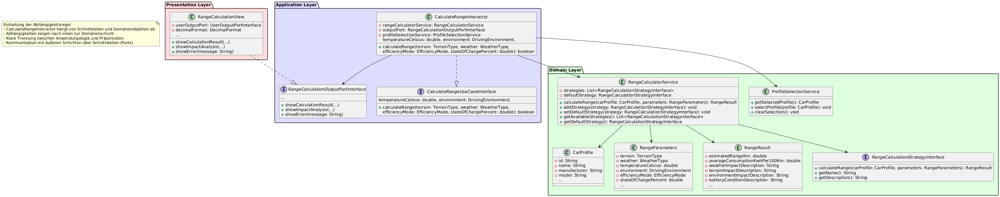Analyse des positiven Beispiels
- Implementiert ein Interface aus der Application-Schicht
- Abhängigkeiten werden über Konstruktor-Injection bereitgestellt
- Abhängigkeiten sind alle Interfaces oder Domain-Services
- Keine Abhängigkeit zu konkreten Implementierungen der äußeren Schichten
- Ausgabe erfolgt über ein Port-Interface (RangeCalculationOutputPortInterface)
- Strikte Validierung mit Objects.requireNonNull()
Negatives Beispiel: JsonCarProfileRepository
public class JsonCarProfileRepository implements CarProfilePersistencePortInterface {
private static final String STORAGE_DIR = "data";
private static final String FILE_NAME = "car_profiles.json";
private final Gson gson;
private final Path filePath;
public JsonCarProfileRepository() {
this.gson = new GsonBuilder()
.setPrettyPrinting()
.registerTypeAdapterFactory(new OptionalTypeAdapterFactory())
.create();
this.filePath = Paths.get(STORAGE_DIR, FILE_NAME);
ensureStorageDirectoryExists();
}
@Override
public List findAll() {
try (FileReader reader = new FileReader(filePath.toFile())) {
Type listType = new TypeToken>() {}.getType();
List profiles = gson.fromJson(reader, listType);
return profiles != null ? profiles : new ArrayList<>();
} catch (IOException e) {
throw new RuntimeException("Failed to read car profiles", e);
}
}
} UML: Negatives Beispiel
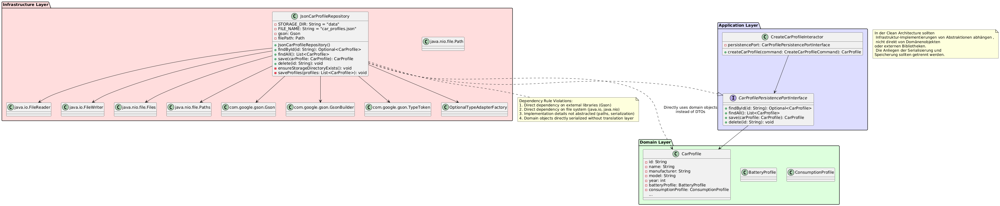Analyse des negativen Beispiels
Verstöße gegen die Dependency Rule:
- Direkte Abhängigkeit zu externen Bibliotheken (Gson)
- Direkter Zugriff auf das Dateisystem (java.io, java.nio)
- Hartcodierte Pfade (STORAGE_DIR, FILE_NAME)
- Ausnahmebehandlung mit generischen Exceptions
- Direkte Implementierung der Dateioperationen
Verbesserungsvorschlag:
- Einführung eines FileStoragePortInterface
- Auslagerung der JSON-Serialisierung
- Konfigurierbare Pfade (z.B. über Umgebungsvariablen)
- Fachliche Exceptions wie ProfileNotFoundException
- Strikte Trennung von Persistenz und Domänenmodell
Kapitel 3:
SOLID (8P)
SRP – Single Responsibility Principle (3P)
-
Jeweils eine Klasse als positives und negatives Beispiel für SRP;
jeweils UML und Beschreibung der Aufgabe bzw. der Aufgaben und
möglicher Lösungsweg des Negativ-Beispiels (inkl. UML). -
Def.:
Jede Klasse sollte genau eine Verantwortlichkeit haben,
d.h. einen einzigen Grund für Änderungen.
Positives Beispiel: RangeCalculatorService
- Verwaltung von Reichweiten-Berechnungsstrategien
- Bereitstellung einer einheitlichen Schnittstelle zur Reichweitenberechnung
- Delegation der Berechnung an die jeweils konfigurierte Strategie
Verantwortung der Klasse:
- Interaktion mit dem Benutzer (Eingaben verarbeiten)
- Ausgabe oder Darstellung der Ergebnisse
- Laden oder Speichern von Fahrzeugdaten
Was die Klasse ausdrücklich nicht macht:
Die Klasse erfüllt somit das SRP: Änderungen wären ausschließlich aufgrund interner Strategie-Logik oder Berechnung notwendig – nicht wegen externer Anliegen.
Positives Beispiel: Code
public class RangeCalculatorService {
private final List strategies;
private RangeCalculationStrategyInterface defaultStrategy;
public RangeCalculatorService() {
this.strategies = new ArrayList<>();
WltpBasedRangeCalculationStrategy wltpStrategy = new WltpBasedRangeCalculationStrategy();
ConsumptionBasedRangeCalculationStrategy consumptionStrategy = new ConsumptionBasedRangeCalculationStrategy();
this.strategies.add(wltpStrategy);
this.strategies.add(consumptionStrategy);
this.defaultStrategy = consumptionStrategy;
}
public void addStrategy(RangeCalculationStrategyInterface strategy) {
Objects.requireNonNull(strategy, "Strategy cannot be null");
strategies.add(strategy);
}
public void setDefaultStrategy(RangeCalculationStrategyInterface strategy) {
Objects.requireNonNull(strategy, "Strategy cannot be null");
if (!strategies.contains(strategy)) {
strategies.add(strategy);
}
this.defaultStrategy = strategy;
}
public List getAvailableStrategies() {
return new ArrayList<>(strategies);
}
public RangeCalculationStrategyInterface getDefaultStrategy() {
return defaultStrategy;
}
public RangeResult calculateRange(CarProfile carProfile, RangeParameters parameters) {
Objects.requireNonNull(carProfile, "Car profile cannot be null");
Objects.requireNonNull(parameters, "Range parameters cannot be null");
return defaultStrategy.calculateRange(carProfile, parameters);
}
public RangeResult calculateRangeWithStrategy(CarProfile carProfile, RangeParameters parameters, RangeCalculationStrategyInterface strategy) {
Objects.requireNonNull(carProfile, "Car profile cannot be null");
Objects.requireNonNull(parameters, "Range parameters cannot be null");
Objects.requireNonNull(strategy, "Strategy cannot be null");
return strategy.calculateRange(carProfile, parameters);
}
} Negatives Beispiel: ApplicationControllerWithActionMenu
Negatives Beispiel: Erklärung
- Navigation: Verwaltet Zustandsübergänge zwischen allen Bildschirmen
- UI-Logik: Verarbeitet Benutzereingaben aus mehreren Menüs
- Profilmanagement: Erstellen, Editieren und Löschen von Fahrzeugprofilen
- View-Management: Interaktion mit zahlreichen Views
- Validierung: Eingabevalidierung und Datensammlung
Verantwortlichkeiten:
- Mehrere Gründe für Änderungen (UI-Änderung, Navigationslogik, Profilmanagement)
- Schwer testbar (zu viele Abhängigkeiten und komplexe Interaktionen)
- Verletzt Clean Architecture durch zu enge Kopplung von Verantwortlichkeiten
- Hohe Komplexität durch zahlreiche Methoden und switch-case Logik
- Mehr als 300 Zeilen -> Schlechte Lesbarkeit
Probleme:
Negatives Beispiel: Code
public class ApplicationControllerWithActionMenu {
private final CarProfilePersistencePortInterface repository;
private final NavigationUseCaseInterface navigationUseCase;
private final ProfileSelectionService profileSelectionService;
private final UserInputService userInputService;
private final ActionAvailabilityService actionAvailabilityService;
private final ShowWelcomeUseCaseInterface showWelcomeUseCase;
private final ShowCarProfileMenuUseCaseInterface showCarProfileMenuUseCase;
private final CreateCarProfileUseCaseInterface createCarProfileUseCase;
private final WelcomeView welcomeView;
private final MainMenuView mainMenuView;
private final CarProfileView carProfileView;
private final UserInputPortInterface userInputPort;
private final UserOutputPortInterface userOutputPort;
private final ActionMenuController actionMenuController;
public ApplicationControllerWithActionMenu(
UserInputPortInterface userInputPort,
UserOutputPortInterface userOutputPort,
CarProfilePersistencePortInterface repository,
NavigationUseCaseInterface navigationUseCase,
ProfileSelectionService profileSelectionService,
ActionAvailabilityService actionAvailabilityService,
ShowWelcomeUseCaseInterface showWelcomeUseCase,
ShowCarProfileMenuUseCaseInterface showCarProfileMenuUseCase,
ShowActionMenuUseCaseInterface showActionMenuUseCase,
CreateCarProfileUseCaseInterface createCarProfileUseCase,
ExecuteActionUseCaseInterface executeActionUseCase,
InputValidationServiceInterface validationService,
WelcomeView welcomeView, MainMenuView mainMenuView,
CarProfileView carProfileView) {
this.userInputPort = userInputPort;
this.userOutputPort = userOutputPort;
this.repository = repository;
this.navigationUseCase = navigationUseCase;
this.profileSelectionService = profileSelectionService;
this.actionAvailabilityService = actionAvailabilityService;
this.showWelcomeUseCase = showWelcomeUseCase;
this.showCarProfileMenuUseCase = showCarProfileMenuUseCase;
this.createCarProfileUseCase = createCarProfileUseCase;
this.welcomeView = welcomeView;
this.mainMenuView = mainMenuView;
this.carProfileView = carProfileView;
this.userInputService = new UserInputService(userInputPort,
userOutputPort,
validationService);
this.actionMenuController = new ActionMenuController(userInputPort,
userOutputPort,
showActionMenuUseCase,
executeActionUseCase,
actionAvailabilityService);
}
public void processCurrentState() {
ApplicationState currentState = navigationUseCase.getCurrentState();
switch (currentState) {
case WELCOME:
handleWelcome();
break;
case MAIN_MENU:
handleMainMenu();
break;
case CAR_PROFILE_MENU:
handleCarProfileMenu();
break;
case CREATE_CAR_PROFILE:
handleCreateCarProfile();
break;
case EDIT_CAR_PROFILE:
handleEditCarProfile();
break;
case DELETE_CAR_PROFILE:
handleDeleteCarProfile();
break;
case ACTION_MENU:
handleActionMenu();
break;
default:
break;
}
}
private void handleWelcome() {
showWelcomeUseCase.showWelcome(welcomeView);
navigationUseCase.navigateToMainMenu();
}
private void handleMainMenu() {
CarProfile selectedProfile = profileSelectionService.getSelectedProfile();
mainMenuView.showMainMenu();
if (selectedProfile != null) {
mainMenuView.showProfileSelected(selectedProfile.getName());
} else {
mainMenuView.showNoProfileSelected();
}
mainMenuView.showMenuOptions();
mainMenuView.showPrompt();
int choice = userInputPort.readInt();
switch (choice) {
case 1:
navigationUseCase.navigateToCarProfileMenu();
break;
case 2:
if (actionAvailabilityService.areActionsAvailable()) {
navigationUseCase.navigateToActionMenu();
} else {
userOutputPort.displayLine(
"No car profile selected. Please select a profile first.");
userInputPort.readLine();
}
break;
case 3:
navigationUseCase.exit();
break;
default:
userOutputPort.displayLine("Invalid choice. Please try again.");
}
}
private void handleCarProfileMenu() {
showCarProfileMenuUseCase.showCarProfileMenu(carProfileView);
int choice = userInputPort.readInt();
switch (choice) {
case 1:
viewAllCarProfiles();
break;
case 2:
navigationUseCase.navigateToCreateCarProfile();
break;
case 3:
navigationUseCase.navigateToDeleteCarProfile();
break;
case 4:
navigationUseCase.navigateToEditCarProfile();
break;
case 5:
navigationUseCase.navigateToMainMenu();
break;
default:
userOutputPort.displayLine("Invalid choice. Please try again.");
}
}
private void handleActionMenu() {
actionMenuController.processActionMenu();
userInputPort.readLine();
navigationUseCase.navigateToMainMenu();
}
private void viewAllCarProfiles() {
List profiles = repository.findAll();
if (profiles.isEmpty()) {
carProfileView.showNoProfilesMessage();
return;
}
carProfileView.showAllCarProfiles(profiles);
carProfileView.askToSelectProfile();
String response = userInputPort.readLine().toLowerCase();
if (response.equals("yes") || response.equals("y")) {
selectCarProfile(profiles);
}
}
private void selectCarProfile(List profiles) {
carProfileView.showProfileSelection(profiles);
int choice = userInputPort.readInt();
if (choice > 0 && choice <= profiles.size()) {
CarProfile selectedProfile = profiles.get(choice - 1);
profileSelectionService.selectProfile(selectedProfile);
carProfileView.showSelectedProfile(selectedProfile);
} else {
carProfileView.showInvalidChoice();
}
}
private void handleCreateCarProfile() {
carProfileView.showCreateProfileHeader();
String name = userInputService.getValidatedTextInput(
"Enter profile name: ",
"name");
String manufacturer = userInputService.getValidatedTextInput(
"Enter manufacturer: ",
"manufacturer");
String model = userInputService.getValidatedTextInput(
"Enter model: ",
"model");
int year = userInputService.getValidatedIntInput(
"Enter build year: ",
"year");
boolean hasHeatPump = userInputService.getBooleanInput(
"Has heat pump? (yes/no): ");
double wltpRangeKm = userInputService.getValidatedDoubleInput(
"Enter WLTP range (km): ",
"wltp range");
double maxDcPowerKw = userInputService.getValidatedDoubleInput(
"Enter maximum DC charging power (kW): ",
"dc charging power");
double maxAcPowerKw = userInputService.getValidatedDoubleInput(
"Enter maximum AC charging power (kW): ",
"ac charging power");
org.ulrica.domain.valueobject.BatteryType batteryType = userInputService.selectBatteryType();
double batteryCapacityKwh = userInputService.getValidatedDoubleInput(
"Enter battery capacity (kWh): ",
"battery capacity");
double batteryDegradationPercent = userInputService.getValidatedDoubleInput(
"Enter current battery degradation (%): ",
"battery degradation");
carProfileView.showConsumptionProfileSetup();
double consumptionAt50Kmh = userInputService.getValidatedDoubleInput(
"Enter consumption at 50 km/h (kWh/100km): ",
"consumption");
double consumptionAt100Kmh = userInputService.getValidatedDoubleInput(
"Enter consumption at 100 km/h (kWh/100km): ",
"consumption");
double consumptionAt130Kmh = userInputService.getValidatedDoubleInput(
"Enter consumption at 130 km/h (kWh/100km): ",
"consumption");
CreateCarProfileUseCaseInterface.CreateCarProfileCommand command = new CreateCarProfileUseCaseInterface.CreateCarProfileCommand(
name,
manufacturer,
model,
year,
hasHeatPump,
wltpRangeKm,
maxDcPowerKw,
maxAcPowerKw,
batteryType.name(),
batteryCapacityKwh,
batteryDegradationPercent,
consumptionAt50Kmh,
consumptionAt100Kmh,
consumptionAt130Kmh);
CarProfile carProfile = createCarProfileUseCase.createCarProfile(
command);
carProfileView.showProfileCreated(carProfile);
userInputPort.readLine();
navigationUseCase.navigateToCarProfileMenu();
}
private void handleEditCarProfile() {
List profiles = repository.findAll();
if (profiles.isEmpty()) {
carProfileView.showNoProfilesMessage();
navigationUseCase.navigateToCarProfileMenu();
return;
}
carProfileView.showAllCarProfiles(profiles);
int choice = userInputService.getValidatedIntInput(
"Select profile to edit (1-" + profiles.size() + "): ",
"profile selection");
if (choice > 0 && choice <= profiles.size()) {
carProfileView.showEditNotImplemented();
} else {
carProfileView.showInvalidChoice();
}
navigationUseCase.navigateToCarProfileMenu();
}
private void handleDeleteCarProfile() {
List profiles = repository.findAll();
if (profiles.isEmpty()) {
carProfileView.showNoProfilesMessage();
navigationUseCase.navigateToCarProfileMenu();
return;
}
carProfileView.showAllCarProfiles(profiles);
int choice = userInputService.getValidatedIntInput(
"Select profile to delete (1-" + profiles.size() + "): ",
"profile selection");
if (choice > 0 && choice <= profiles.size()) {
CarProfile profileToDelete = profiles.get(choice - 1);
repository.delete(profileToDelete.getId());
carProfileView.showProfileDeleted(profileToDelete);
if (profileSelectionService.getSelectedProfile() != null && profileSelectionService
.getSelectedProfile()
.getId()
.equals(profileToDelete.getId())) {
profileSelectionService.clearSelection();
}
} else {
carProfileView.showInvalidChoice();
}
navigationUseCase.navigateToCarProfileMenu();
}
}
Negatives Beispiel: UML
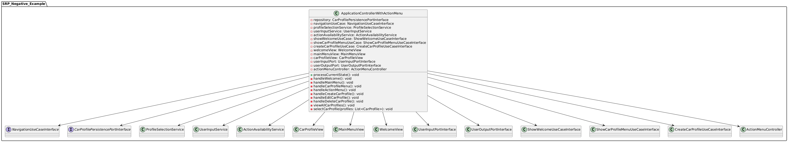Negatives Beispiel:
Verbesserungen & UML
- Klare Aufteilung in Verantwortlichkeitsbereiche (Controller, Collector, Views)
- Stärkere Modularität und Wiederverwendbarkeit
- Einfacheres Testen durch geringe Kopplung
- Einheitliche, kohärente Klassenstruktur
-> Verletzt nicht die Clean Architecture mehr

Negatives Beispiel: Refactoring
Aufteilung in spezialisierte Controller:
// Spezialisiert auf Navigation
public class NavigationController {
private final NavigationUseCaseInterface navigationUseCase;
private final ActionAvailabilityService actionService;
public void processMainMenu(int choice) {
switch (choice) {
case 1:
navigationUseCase.navigateToCarProfileMenu();
break;
case 2:
if (actionService.areActionsAvailable()) {
navigationUseCase.navigateToActionMenu();
}
break;
// ...
}
}
}// Spezialisiert auf Profilmanagement
public class CarProfileController {
private final CreateCarProfileUseCaseInterface createUseCase;
private final CarProfileView carProfileView;
public CarProfile createCarProfile(CreateCarProfileCommand cmd) {
CarProfile profile = createUseCase.createCarProfile(cmd);
carProfileView.showProfileCreated(profile);
return profile;
}
public void showProfiles(List profiles) {
carProfileView.showAllCarProfiles(profiles);
}
} Negatives Beispiel: Refactoring (Fortsetzung)
// Spezialisiert auf Eingabesammlung
public class ProfileDataCollector {
private final UserInputService inputService;
public CreateCarProfileCommand collectProfileData() {
String name = inputService.getValidatedTextInput(
"Enter name: ", "name");
String manufacturer = inputService.getValidatedTextInput(
"Enter manufacturer: ", "manufacturer");
// Weitere Eingabeabfragen...
return new CreateCarProfileCommand(
name, manufacturer, model, year,
hasHeatPump, wltpRange, dcPower,
acPower, batteryType.name(), capacity,
degradation, consumption50,
consumption100, consumption130);
}
}// Koordinator-Klasse mit weniger Verantwortung
public class ApplicationCoordinator {
private final NavigationController navController;
private final CarProfileController profileController;
private final ProfileDataCollector dataCollector;
public void processCurrentState(ApplicationState state) {
switch (state) {
case CREATE_CAR_PROFILE:
CreateCarProfileCommand data =
dataCollector.collectProfileData();
profileController.createCarProfile(data);
navController.navigateToCarProfileMenu();
break;
// Weitere vereinfachte Zustandsverarbeitung
}
}
}OCP - Open Closed Principle (3p)
Jeweils eine Klasse als positives und negatives Beispiel für OCP; jeweils UML und Analyse mit Begründung, warum das OCP erfüllt/nicht erfüllt wurde – falls erfüllt: warum hier sinnvoll/welches Problem gab es? Falls nicht erfüllt: wie könnte man es lösen (inkl. UML)?
Positives Beispiel: UML & Beschreibung
- Abstraktion über Interface: RangeCalculationStrategyInterface
- Neue Strategien können ohne Änderung der Kernlogik hinzugefügt werden
- Der RangeCalculatorService bleibt unverändert
- Einfache Erweiterung um neue Berechnungsmethoden
- Geschlossen für Modifikation: Bestehender Code wird nicht geändert
Positives Beispiel: Code
// Abstraktion (Interface)
public interface RangeCalculationStrategyInterface {
RangeResult calculateRange(CarProfile carProfile, RangeParameters parameters);
String getName();
String getDescription();
}
// Erste Implementierung
public class WltpBasedRangeCalculationStrategy implements RangeCalculationStrategyInterface {
@Override
public RangeResult calculateRange(CarProfile carProfile, RangeParameters parameters) {
// WLTP-basierte Berechnung...
}
@Override
public String getName() {
return "WLTP-based Range Calculation";
}
}
// Zweite Implementierung
public class ConsumptionBasedRangeCalculationStrategy implements RangeCalculationStrategyInterface {
@Override
public RangeResult calculateRange(CarProfile carProfile, RangeParameters parameters) {
// Verbrauchsbasierte Berechnung...
}
@Override
public String getName() {
return "Consumption-based Range Calculation";
}
}OCP - Negatives Beispiel: AcChargingCalculator
OCP – Negatives Beispiel: Erklärung
- Typdefinition:
Verwaltet statische Konstanten für Steckertypen - Leistungsberechnung:
Bestimmt Ladeleistung abhängig vom Steckertyp - Bezeichnerlogik:
Liefert Namen abhängig vom Steckertyp - Effizienzberechnung:
Berechnet Effizienzverluste abhängig vom Steckertyp
Verantwortlichkeiten:
- Mehrere switch-Anweisungen für dieselbe Entscheidungslogik
- Verstoß gegen das Open/Closed Principle: Änderungen erfordern Modifikationen an bestehenden Methoden
- Neue Steckertypen erzwingen Änderungen an mehreren Stellen im Code
- Hohe Fehleranfälligkeit und schlechtere Testbarkeit
- Verletzung von DRY (Don't Repeat Yourself)
Probleme:
Negatives Beispiel: UML
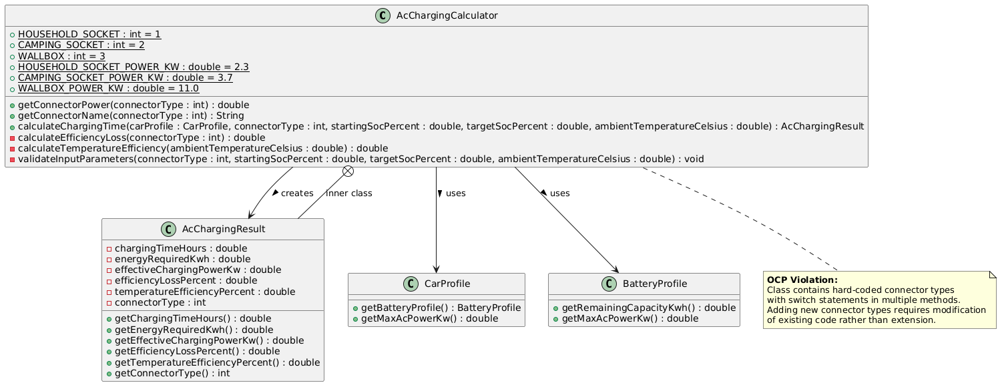OCP – Negatives Beispiel: Code
public class AcChargingCalculator {
public static final double MIN_BATTERY_TEMPERATURE = -20.0;
public static final double MAX_BATTERY_TEMPERATURE = 60.0;
public static final double OPTIMAL_TEMPERATURE_MIN = 15.0;
public static final double OPTIMAL_TEMPERATURE_MAX = 35.0;
public static final int HOUSEHOLD_SOCKET = 1;
public static final int CAMPING_SOCKET = 2;
public static final int WALLBOX = 3;
public static final double HOUSEHOLD_SOCKET_POWER_KW = 2.3;
public static final double CAMPING_SOCKET_POWER_KW = 3.7;
public static final double WALLBOX_POWER_KW = 11.0;
public double getConnectorPower(int connectorType) {
switch (connectorType) {
case HOUSEHOLD_SOCKET:
return HOUSEHOLD_SOCKET_POWER_KW;
case CAMPING_SOCKET:
return CAMPING_SOCKET_POWER_KW;
case WALLBOX:
return WALLBOX_POWER_KW;
default:
throw new IllegalArgumentException("Invalid connector type: " + connectorType);
}
}
public String getConnectorName(int connectorType) {
switch (connectorType) {
case HOUSEHOLD_SOCKET:
return "Household Socket";
case CAMPING_SOCKET:
return "Camping Socket";
case WALLBOX:
return "Wallbox";
default:
throw new IllegalArgumentException("Invalid connector type: " + connectorType);
}
}
public AcChargingResult calculateChargingTime(
CarProfile carProfile,
int connectorType,
double startingSocPercent,
double targetSocPercent,
double ambientTemperatureCelsius) {
validateInputParameters(connectorType, startingSocPercent, targetSocPercent, ambientTemperatureCelsius);
BatteryProfile batteryProfile = carProfile.getBatteryProfile();
double remainingCapacityKwh = batteryProfile.getRemainingCapacityKwh();
double energyToAddKwh = remainingCapacityKwh * (targetSocPercent - startingSocPercent) / 100.0;
double temperatureEfficiency = calculateTemperatureEfficiency(ambientTemperatureCelsius);
double efficiencyLoss = calculateEfficiencyLoss(connectorType);
double connectorPowerKw = getConnectorPower(connectorType);
double maxAcPowerKw = Math.min(batteryProfile.getMaxAcPowerKw(), carProfile.getMaxAcPowerKw());
double effectivePowerKw = Math.min(connectorPowerKw, maxAcPowerKw);
effectivePowerKw = effectivePowerKw * (1 - efficiencyLoss) * temperatureEfficiency;
double chargingTimeHours = energyToAddKwh / effectivePowerKw;
return new AcChargingResult(
chargingTimeHours,
energyToAddKwh,
effectivePowerKw,
efficiencyLoss * 100,
temperatureEfficiency * 100,
connectorType
);
}
private double calculateTemperatureEfficiency(double ambientTemperatureCelsius) {
if (ambientTemperatureCelsius < MIN_BATTERY_TEMPERATURE || ambientTemperatureCelsius > MAX_BATTERY_TEMPERATURE) {
return 0.0;
}
if (ambientTemperatureCelsius >= OPTIMAL_TEMPERATURE_MIN && ambientTemperatureCelsius <= OPTIMAL_TEMPERATURE_MAX) {
return 1.0;
}
if (ambientTemperatureCelsius < OPTIMAL_TEMPERATURE_MIN) {
return 0.7 + 0.3 * (ambientTemperatureCelsius - MIN_BATTERY_TEMPERATURE) / (OPTIMAL_TEMPERATURE_MIN - MIN_BATTERY_TEMPERATURE);
} else {
return 0.7 + 0.3 * (MAX_BATTERY_TEMPERATURE - ambientTemperatureCelsius) / (MAX_BATTERY_TEMPERATURE - OPTIMAL_TEMPERATURE_MAX);
}
}
private double calculateEfficiencyLoss(int connectorType) {
switch (connectorType) {
case HOUSEHOLD_SOCKET:
return 0.1;
case CAMPING_SOCKET:
return 0.07;
case WALLBOX:
return 0.05;
default:
throw new IllegalArgumentException("Invalid connector type: " + connectorType);
}
}
private void validateInputParameters(
int connectorType,
double startingSocPercent,
double targetSocPercent,
double ambientTemperatureCelsius) {
if (connectorType < HOUSEHOLD_SOCKET || connectorType > WALLBOX) {
throw new IllegalArgumentException("Invalid connector type: " + connectorType);
}
if (startingSocPercent < 0 || startingSocPercent > 100) {
throw new IllegalArgumentException("Starting SoC must be between 0 and 100 percent");
}
if (targetSocPercent < 0 || targetSocPercent > 100) {
throw new IllegalArgumentException("Target SoC must be between 0 and 100 percent");
}
if (targetSocPercent <= startingSocPercent) {
throw new IllegalArgumentException("Target SoC must be greater than starting SoC");
}
if (ambientTemperatureCelsius < MIN_BATTERY_TEMPERATURE || ambientTemperatureCelsius > MAX_BATTERY_TEMPERATURE) {
throw new IllegalArgumentException("Ambient temperature must be between " +
MIN_BATTERY_TEMPERATURE + " and " + MAX_BATTERY_TEMPERATURE + " Celsius");
}
}
public static class AcChargingResult {
private final double chargingTimeHours;
private final double energyRequiredKwh;
private final double effectiveChargingPowerKw;
private final double efficiencyLossPercent;
private final double temperatureEfficiencyPercent;
private final int connectorType;
public AcChargingResult(
double chargingTimeHours,
double energyRequiredKwh,
double effectiveChargingPowerKw,
double efficiencyLossPercent,
double temperatureEfficiencyPercent,
int connectorType) {
this.chargingTimeHours = chargingTimeHours;
this.energyRequiredKwh = energyRequiredKwh;
this.effectiveChargingPowerKw = effectiveChargingPowerKw;
this.efficiencyLossPercent = efficiencyLossPercent;
this.temperatureEfficiencyPercent = temperatureEfficiencyPercent;
this.connectorType = connectorType;
}
public double getChargingTimeHours() {
return chargingTimeHours;
}
public double getEnergyRequiredKwh() {
return energyRequiredKwh;
}
public double getEffectiveChargingPowerKw() {
return effectiveChargingPowerKw;
}
public double getEfficiencyLossPercent() {
return efficiencyLossPercent;
}
public double getTemperatureEfficiencyPercent() {
return temperatureEfficiencyPercent;
}
public int getConnectorType() {
return connectorType;
}
}
} Negatives Beispiel: Lösung & UML

Lösungsansatz:
- Einführung eines Connector-Interfaces und konkreter Implementierungen
- Registry/Factory zur Verwaltung von Connector-Typen
- Neue Connector-Typen können ohne Änderung der AcChargingCalculator-Klasse hinzugefügt werden
LSP - Liskov Substitution Principle (2p)
-
Jeweils eine Klasse als positives und negatives Beispiel für OCP; jeweils UML und Analyse mit Begründung, warum das OCP erfüllt/nicht erfüllt wurde – falls erfüllt: warum hier sinnvoll/welches Problem gab es? Falls nicht erfüllt: wie könnte man es lösen (inkl. UML)?
-
Eine abgeleitete Klasse soll an jeder beliebigen Stelle ihre Basisklasse ersetzen können, ohne, dass es zu unerwünschten Nebeneffekten kommt.
Positives Beispiel:
- Die Klasse
CreateCarProfileInteractorverwendet ausschließlich das InterfaceCarProfilePersistencePortInterface JsonCarProfileRepositoryimplementiert alle Methoden des Interfaces vollständig- Das Verhalten bei Methodenaufrufen entspricht exakt dem was durch das Interface definiert wird
- Die konkrete Implementierung kann jederzeit durch eine andere ersetzt werden, ohne dass das Verhalten des Systems sich ändert.
Hält LSP ein:
- Ermöglicht sauberes und sicheres Austauschen z.B. der Persistenzlogik
- Erhöhte Wartbarkeit, da Änderungen in der Infrastruktur keine (Seiten-)Effekte auf die Anwendungsschicht haben
- Fördert Erweiterbarkeit und Offenheit für neue Anforderungen (Open/Closed-Prinzip).
- Entkopplung von Infrastruktur und Geschäftslogik führt zu robusterer Architektur.
Vorteile dadurch:
Positives Beispiel: UML
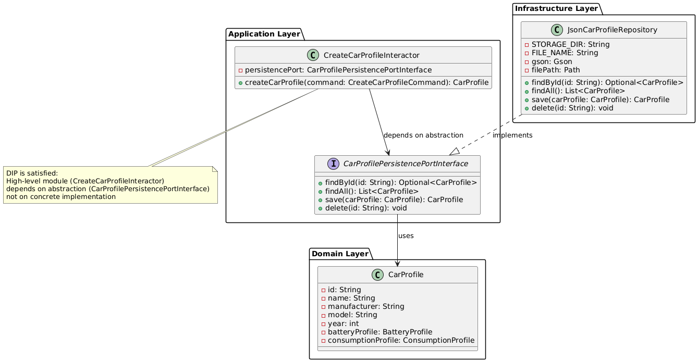LSP – Negatives Beispiel: Controller Hierarchie
LSP – Negatives Beispiel: Probleme
- Keine gemeinsame Basisklasse: AC- und DC-Controller sind strukturell identisch, aber nicht gemeinsam abstrahiert.
- Redundanz im Code: Gleichartige Konstruktoren und Methoden wie
Process...Calculation(), aber doppelt implementiert. - Verletzung der Austauschbarkeit: Der
ExecuteActionInteractorkann nicht einheitlich mit Controllern arbeiten. - Kein Polymorphismus: Zwingt den Client zur Behandlung jeder
Controller-Klasse separat (z. B. mit
if-Verzweigungen). - Mocks dupliziert: Separate Mock-Klassen mit nahezu identischem Code.
Diese Struktur verletzt das Liskov-Substitutionsprinzip, da die Controller nicht polymorph verwendet werden können, obwohl sie die gleiche grundlegende Funktionalität anbieten
Negatives Beispiel: UML
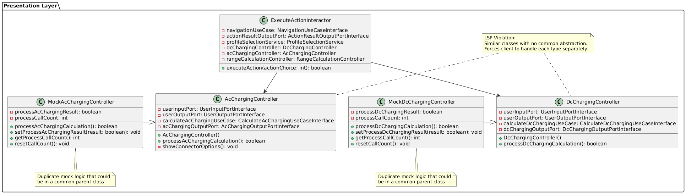Negatives Beispiel: Lösung & UML
- Einführung einer gemeinsamen Basisklasse
ChargingControllermit MethodeprocessChargingCalculation() - Polymorphismus durch Vererbung: AC- und DC-Controller erben von dieser Abstraktion und können austauschbar verwendet werden
- Zentrale Nutzung im Client: Der
ExecuteActionInteractorreferenziert nur die Abstraktion, nicht konkrete Typen - MockController vereinheitlicht: Ein
MockChargingControllerersetzt mehrere spezialisierte Mocks.
Kapitel 4:
Weitere Prinzipien
(8P)
Analyse GRASP: Geringe Kopplung (3P)
Eine bis jetzt noch nicht behandelte Klasse als positives Beispiel geringer Kopplung; UML mit zusammenspielenden Klassen, Aufgabenbeschreibung der Klasse und Begründung, warum hier eine geringe Kopplung vorliegt; es müssen auch die Aufrufer/Nutzer der Klasse berücksichtigt werden
Geringe Kopplung:
AcChargingController
Der AcChargingController koordiniert den Ablauf der AC-Ladeberechnung:
Benutzereingaben werden gelesen, die Ladeparameter werden über ein Anwendungs & Use-Case
Interface berechnet
und die Ergebnisse werden anschließend ausgegeben
Die gesamte Kommunikation erfolgt ausschließlich über abstrahierte Schnittstellen (Ports), wodurch der Controller unabhängig von konkreten Implementierungen bleibt.
Geringe Kopplung:
UML & Erklärung
- Verwendet nur Interfaces (Ports) statt konkreter Klassen
- Konstruktor-Injections aller Abhängigkeiten (DIP)
- Strikte Trennung von Steuerung, Ein-/Ausgabe und Fachlogik
- Keine hardcodierten Abhängigkeiten
- Alle Abhängigkeiten sind austauschbar und leicht testbar
Geringe Kopplung: Aufrufer/Nutzer der Klasse
Der AcChargingController wird durch eine externe Instanz, z. B. durch eine
Main-Klasse oder ein Framework-Initializer, instanziiert und diese übergibt die nötigen Ports
per Konstruktor (Dependency Injection) und ruft die Methode
processChargingCalculation() auf.
Somit bleibt der Controller vollständig entkoppelt vom Lebenszyklus und der konkreten Implementierung seiner Abhängigkeiten.
Geringe Kopplung:
Vorteile der geringen Kopplung
- Testbarkeit: Einfaches Mocking der Abhängigkeiten für Unit-Tests
- Wartbarkeit: Änderungen an Implementierungen der Ports haben keinen Einfluss auf den Controller
- Flexibilität: Verschiedene Implementierungen können ohne Änderung am Controller ausgetauscht werden
- Wiederverwendbarkeit: Der Controller kann mit unterschiedlichen Implementierungen genutzt werden
- Verständlichkeit: Klare Verantwortlichkeiten und Abhängigkeiten
Analyse GRASP: Polymorphismus (3P)
Eine Klasse als positives Beispiel entweder von Polymorphismus oder von Pure Fabrication; UML Diagramm und Begründung, warum es hier zum Einsatz kommt
RangeCalculationStrategy
- Polymorphismus: Verantwortung für das Verhalten wird an ein abstraktes Interface delegiert so dass konkrete Klassen polymorph interagieren können
- Prinzip der Offenheit: System ist offen für neue Strategien, aber geschlossen für Änderungen (OCP).
- Geringe Kopplung: Der aufrufende Code ist nicht abhängig von konkreten Implementierungen, sondern lediglich vom Interface.
- Starke Kohäsion: Jede Strategie kapselt exakt eine konkrete Berechnungslogik.
Vorteile des Polymorphismus im Anwendungskontext
- Erweiterbarkeit: Neue Strategien können einfach hinzugefügt werden, ohne bestehende Klassen zu verändern.
- Wiederverwendbarkeit: Strategien sind unabhängig voneinander einsetzbar und modular.
- Kapselung: Die Implementierungsdetails der einzelnen Strategien sind vollständig vom aufrufenden Code abgeschirmt.
- Wartbarkeit: Änderungen an einer Strategie beeinflussen keine anderen Klassen, da jede Strategie isoliert ist.
- Testbarkeit: Einzelne Strategien können unabhängig getestet werden, was die Qualitätssicherung vereinfacht.
- Komposition: Die konkrete Strategie kann zur Laufzeit ausgetauscht oder kombiniert werden – ohne Anpassung des Client-Codes.
DRY – Don't Repeat Yourself (2P)
Ein Commit angeben, bei dem duplizierter Code/duplizierte Logik aufgelöst wurde; Code-Beispiele (vorher/nachher) einfügen; begründen und Auswirkung beschreiben – ggf. UML zum Verständnis ergänzen
DRY: CarProfileController
Commit 89f9ea2:
Refactoring von CarProfileController
zur Reduktion der
duplizierten Logik
- Duplizierter Code für ähnliche Operationen
- Schwer zu erkennendes Muster im Code
- Business-Logik war mit UI-Logik vermischt
- Hohe Fehleranfälligkeit bei Änderungen
- Clean Architecture war nicht erfüllt
Problem:
- Auslagerung der Business-Logik in einen Service
- Zusammenfassung ähnlicher Methoden
- Einführung von Hilfsmethoden für gemeinsame Funktionalität
- Trennung von UI und Geschäftslogik
- Folgen von GRASP & SOLID
Lösung:
DRY: Altes UML
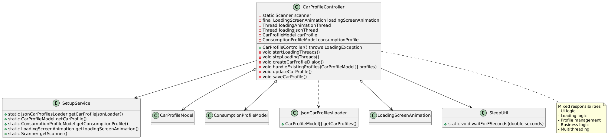DRY – Vorher: Code
public class CarProfileController {
private static Scanner scanner;
private final LoadingScreenAnimation loadingScreenAnimation;
private Thread loadingAnimationThread;
private Thread loadingJsonThread;
private CarProfileModel carProfile;
private ConsumptionProfileModel consumptionProfile;
public CarProfileController() throws LoadingException {
JsonCarProfilesLoader carProfileJsonLoader = SetupService.getCarProfileJsonLoader();
carProfile = SetupService.getCarProfile();
consumptionProfile = SetupService.getConsumptionProfile();
loadingScreenAnimation = SetupService.getLoadingScreenAnimation();
loadingAnimationThread = new Thread(loadingScreenAnimation);
loadingJsonThread = new Thread(carProfileJsonLoader);
scanner = SetupService.getScanner();
System.out.println("Hey! To begin with, let's see if you have any car profiles saved.");
SleepUtil.waitForFSeconds(1.0);
startLoadingThreads();
SleepUtil.waitForFSeconds(3.0);
stopLoadingThreads();
CarProfileModel[] carProfiles = carProfileJsonLoader.getCarProfiles();
if (carProfiles == null || carProfiles.length <= 1) {
System.out.println("→ No car profiles could be found;\n Continuing with creating a new car profile.");
SleepUtil.waitForFSeconds(2.0);
createCarProfileDialog();
} else {
howCarProfileSelection();
}
}
// Weitere Methoden...
}DRY: Neues UML
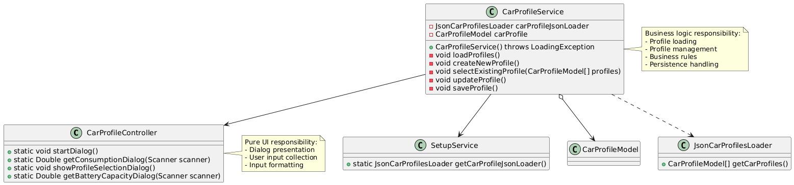DRY – Nachher: Code
public class CarProfileController {
public static void startDialog() {
System.out.println(
"Hey! To begin with, let's see if you have any car profiles saved.");
}
public static Double getConsumptionDialog(Scanner scanner) {
System.out.print("consumption: (in kWh) ");
String input = scanner.nextLine();
if (!input.isEmpty()) {
return Double.valueOf(input);
}
return null;
}
// Weitere UI-Methoden...
}
public class CarProfileService {
private JsonCarProfilesLoader carProfileJsonLoader;
private CarProfileModel carProfile;
public CarProfileService() throws LoadingException {
this.carProfileJsonLoader =
SetupService.getCarProfileJsonLoader();
// UI-Interaktion über Controller
CarProfileController.startDialog();
// Laden der Profile
loadProfiles();
// Weitere Logik...
}
private void loadProfiles() {
// Gemeinsame Ladelogik, nicht mehr dupliziert
CarProfileModel[] profiles =
carProfileJsonLoader.getCarProfiles();
if (profiles == null || profiles.length <= 1) {
createNewProfile();
} else {
selectExistingProfile(profiles);
}
}
// Weitere Methoden...
}
// ...
}
DRY: Vorteile des Refactorings
- Bessere Wartbarkeit: Änderungen an UI oder Logik können unabhängig durchgeführt werden
- Übersichtlichkeit: Kürzere Klassen mit klaren Zuständigkeiten
- Geringere Redundanz: Gemeinsam genutzter Code ist an einer zentralen Stelle definiert
- Bessere Testbarkeit: Service kann unabhängig von UI getestet werden
- Single Responsibility Principle: Klassen haben nur eine Verantwortlichkeit
- Clean Architecture: Klare Trennung der Schichten zwischen Presentation und Application
Kapitel 5:
Unit Tests (8P)
10 Unit Tests (2p)
Zeigen und Beschreiben von 10 Unit-Tests und Beschreibung, was getestet wird
Unit Tests
Test-Strategie
- Fokus auf Domain-Logik als kritischen Kern
- Ignorieren von UI Elementen wie SOUTs
- ca. 100 automatisierte Tests (JUnit)
- 47% Gesamtabdeckung (laut JaCoCo)
- Spezielle Tests für Randfälle und Fehlerbedingungen
- Mocks für externe Abhängigkeiten
Testarten in ULRICA
- Unit-Tests für isolierte Klassen
- Integrationstests für Komponenteninteraktion
- Parametrisierte Tests für Datenvalidierung
- Exception-Tests für Fehlerszenarien
- Stresstest für Berechnung mit großen Datenmengen
Test #1: DC Charging Calculator
@Test
public void testCalculateChargingTime_WithChargingCurve() {
// Testwerte definieren
double startingSoc = 20.0;
double targetSoc = 80.0;
double maxStationPower = 250.0;
double ambientTemperature = 25.0;
// Ladekurve erstellen
Map curvePoints = new HashMap<>();
curvePoints.put(0.0, 150.0); // 0% SOC -> 150 kW
curvePoints.put(20.0, 180.0); // 20% SOC -> 180 kW
curvePoints.put(50.0, 100.0); // 50% SOC -> 100 kW
curvePoints.put(80.0, 50.0); // 80% SOC -> 50 kW
curvePoints.put(100.0, 10.0); // 100% SOC -> 10 kW
ChargingCurve chargingCurve = new ChargingCurve(curvePoints);
// Car mit Ladekurve erstellen
CarProfile carWithCurve = new CarProfile.Builder()
.id("test-id-curve")
.name("Test EV with Curve")
.manufacturer("Test Manufacturer")
.model("Test Model")
.year(2023)
.hasHeatPump(true)
.wltpRangeKm(500)
.maxDcPowerKw(250.0)
.maxAcPowerKw(11.0)
.batteryProfile(batteryProfile)
.consumptionProfile(consumptionProfile)
.chargingCurve(chargingCurve)
.build();
// Service-Methode aufrufen
DcChargingResult result = calculator.calculateChargingTime(
carWithCurve,
startingSoc,
targetSoc,
maxStationPower,
ambientTemperature
);
// Validierung der berechneten Werte
double expectedEnergyToAdd = batteryProfile.getRemainingCapacityKwh() * 0.6;
assertEquals(expectedEnergyToAdd, result.getEnergyToAddKwh(), 0.01);
assertTrue(result.getChargingTimeHours() > 0);
assertTrue(result.getEffectivePowerKw() > 0);
} Testet komplexe Ladeberechnungen mit dynamischer Ladekurve und verschiedenen SOC-Bereichen
Test #2: Range Calculator Service - Strategy Pattern
@Test
public void testAddStrategy() {
// Ausgangssituation dokumentieren
int initialCount = rangeCalculatorService.getAvailableStrategies().size();
// Mock-Strategie erstellen
RangeCalculationStrategyInterface mockStrategy = new RangeCalculationStrategyInterface() {
@Override
public RangeResult calculateRange(CarProfile carProfile, RangeParameters params) {
return new RangeResult(
300.0,
20.0,
"No weather impact",
"No terrain impact",
"No environment impact",
"Battery in good condition"
);
}
@Override
public String getName() {
return "MockStrategy";
}
@Override
public String getDescription() {
return "A mock strategy for testing";
}
};
// Strategie hinzufügen
rangeCalculatorService.addStrategy(mockStrategy);
// Validierung: Strategien-Anzahl ist um 1 erhöht
assertEquals(initialCount + 1, rangeCalculatorService.getAvailableStrategies().size());
}Testet die dynamische Erweiterbarkeit durch das Strategy-Pattern im RangeCalculatorService
Test #3: ChargingCurve Interpolation
@Test
public void testGetChargingPowerAt_Interpolation() {
// Testdaten mit drei Kurven-Punkten erstellen
Map curvePoints = new HashMap<>();
curvePoints.put(0.0, 150.0); // 0% -> 150 kW
curvePoints.put(50.0, 100.0); // 50% -> 100 kW
curvePoints.put(100.0, 10.0); // 100% -> 10 kW
ChargingCurve chargingCurve = new ChargingCurve(curvePoints);
// Test der linearen Interpolation zwischen Punkten
// Test Punkt zwischen 0% und 50%
assertEquals(125.0, chargingCurve.getChargingPowerAt(25.0), 0.001);
// Test Punkt zwischen 50% und 100%
assertEquals(55.0, chargingCurve.getChargingPowerAt(75.0), 0.001);
} Testet die korrekte lineare Interpolation bei der Ladekurve zwischen definierten Punkten
Test #4: ExecuteAction - Komplexe UI-Interaktion
@Test
public void testExecuteAction_NoProfileSelected() {
// Profil-Auswahl leeren
profileSelectionService.clearSelection();
// Action ausführen (DC-Ladung starten)
boolean result = executeActionInteractor.executeAction(1);
// Validieren des erwarteten Verhaltens
assertFalse(result);
assertEquals(1, actionResultView.getErrorCount());
assertEquals(0, actionResultView.getSuccessCount());
assertEquals(0, dcChargingController.getProcessCallCount());
assertEquals(0, acChargingController.getProcessCallCount());
assertEquals(0, rangeCalculationController.getProcessCallCount());
assertTrue(actionResultView.lastErrorContains("No car profile selected"));
}Testet das komplexe Zusammenspiel zwischen UI-Controller, Views und Geschäftslogik mit Mock-Objekten
Test #5: DC Charging - Temperatureinfluss
@Test
public void testCalculateChargingTime_LowTemperature() {
// Kalte Umgebungstemperatur als Testbedingung
double startingSoc = 20.0;
double targetSoc = 60.0;
double maxStationPower = 250.0;
double ambientTemperature = -10.0; // Sehr kalter Tag
// Service-Methode mit Testwerten aufrufen
DcChargingResult result = calculator.calculateChargingTime(
mockCarProfile,
startingSoc,
targetSoc,
maxStationPower,
ambientTemperature
);
// Temperatureinfluss auf Batterie validieren
double expectedBatteryTemp = ambientTemperature + 5.9;
assertEquals(expectedBatteryTemp, result.getEndTemperatureCelsius(), 0.01);
// Leistungsreduktion aufgrund der Temperatur validieren
assertTrue("Bei kalter Temperatur sollte Ladeleistung reduziert sein",
result.getEffectivePowerKw() < maxStationPower);
assertTrue("Bei kalten Temperaturen sollte Ladezeit länger sein",
result.getChargingTimeHours() > 0.5);
}Testet die realistische Simulation von Temperatureinflüssen auf das Ladeverhalten
Test #6: Validierung der Eingabeparameter
@Test
public void testValidateInputParameters_InvalidTargetSoc() {
// Ungültiger SOC-Wert (über 100%)
double startingSoc = 20.0;
double invalidTargetSoc = 110.0;
// Service-Methode aufrufen mit Erwartung auf Exception
assertThrows(IllegalArgumentException.class, () -> {
calculator.calculateChargingTime(
mockCarProfile,
startingSoc,
invalidTargetSoc,
250.0,
25.0
);
});
}
@Test
public void testValidateInputParameters_TargetLessThanStarting() {
// Fehlerhafter Case: Ziel-SOC niedriger als Start-SOC
double startingSoc = 80.0;
double targetSoc = 70.0;
// Validierung dass die API korrekterweise eine Exception wirft
assertThrows(IllegalArgumentException.class, () -> {
calculator.calculateChargingTime(
mockCarProfile,
startingSoc,
targetSoc,
250.0,
25.0
);
});
}Testet die robuste Validierung von Eingabeparametern in der Domain-Logik
Test #7: DI mit Mock-Objekten
@Test
public void testExecuteAction_DcCharging() {
// Setup mit Mock-Objekten und Dependency Injection
profileSelectionService.selectProfile(testProfile);
dcChargingController.setProcessDcChargingResult(true);
// Aktion ausführen
boolean result = executeActionInteractor.executeAction(1);
// Validieren des Verhaltens und der Interaktionen
assertTrue(result);
assertEquals(0, actionResultView.getErrorCount());
assertEquals(1, dcChargingController.getProcessCallCount());
assertEquals(0, acChargingController.getProcessCallCount());
assertEquals(0, rangeCalculationController.getProcessCallCount());
}Testet die korrekte Implementierung von Dependency Injection und das Zusammenspiel von Komponenten
Test #8: ChargingCurve - Robustheit
@Test
public void testInvalidConstructorArguments() {
// Test mit null-Wert
assertThrows(IllegalArgumentException.class, () -> {
new ChargingCurve(null);
});
// Test mit leerer Map
assertThrows(IllegalArgumentException.class, () -> {
new ChargingCurve(new HashMap<>());
});
// Test mit fehlenden Schlüsselpunkten
Map incompletePoints = new HashMap<>();
incompletePoints.put(50.0, 100.0);
assertThrows(IllegalArgumentException.class, () -> {
new ChargingCurve(incompletePoints);
});
} Testet die Robustheit und Fehlerbehandlung bei ungültigen Eingabedaten
Test #9: ProfileSelectionService - Statusverwaltung
@Test
public void testProfileSelection() {
// Initial kein Profil ausgewählt
assertFalse(profileSelectionService.hasSelectedProfile());
// Profil auswählen
CarProfile testProfile = new CarProfile.Builder()
.id("test-id")
.name("Test Car")
.build();
profileSelectionService.selectProfile(testProfile);
// Status und ausgewähltes Profil validieren
assertTrue(profileSelectionService.hasSelectedProfile());
assertEquals(testProfile, profileSelectionService.getSelectedProfile());
// Auswahl zurücksetzen
profileSelectionService.clearSelection();
// Validieren dass kein Profil mehr ausgewählt ist
assertFalse(profileSelectionService.hasSelectedProfile());
assertThrows(IllegalStateException.class, () -> {
profileSelectionService.getSelectedProfile();
});
}Testet die korrekte Statusverwaltung und Fehlerfälle im ProfileSelectionService
Test #10: Validierung von Value Objects
@Test
public void testValueObjectValidation() {
// Gültige Werte
BatteryProfile validProfile = new BatteryProfile(
BatteryType.LFP,
80.0, // Kapazität in kWh
5.0, // Degradation in Prozent
150.0, // Max DC Ladeleistung
11.0 // Max AC Ladeleistung
);
// Eigenschaften validieren
assertEquals(BatteryType.LFP, validProfile.getType());
assertEquals(80.0, validProfile.getCapacityKwh(), 0.001);
assertEquals(5.0, validProfile.getDegradationPercent(), 0.001);
assertEquals(76.0, validProfile.getRemainingCapacityKwh(), 0.001); // 80 - 5%
// Ungültige Werte
assertThrows(IllegalArgumentException.class, () -> {
new BatteryProfile(
BatteryType.LFP,
-10.0, // Negative Kapazität
5.0,
150.0,
11.0
);
});
assertThrows(IllegalArgumentException.class, () -> {
new BatteryProfile(
BatteryType.LFP,
80.0,
110.0, // Degradation > 100%
150.0,
11.0
);
});
}Testet die Validierung und Fehlerbehandlung bei der Erstellung von Value Objects
ATRIP: Automatic, Thorough und Professional (2P)
je Begründung/Erläuterung, wie 'Automatic', 'Thorough' und 'Professional' realisiert wurde – bei 'Thorough' zusätzlich Analyse und Bewertung zur Testabdeckung]
ATRIP: Automatic
Automatisierung durch CI/CD
- GitHub Actions Workflow für automatische Builds
- Automatische Testausführung bei jedem Push/PR
- Maven-basierte Build-Pipeline
- Automatische Code-Coverage-Analyse mit JaCoCo
- Automatische E-Mail-Benachrichtigungen über Testergebnisse
Automatische Test-Tools
- JUnit 4 für Unit Tests
- Maven Surefire für Testausführung
- CLOC für automatische Code-Analyse
- Automatische Validierung von Eingabeparametern
- Selbstvalidierung von Value Objects
ATRIP: Thorough
Testabdeckung (Coverage)
- Gesamtabdeckung: 47%
- Domain Layer: 68%
- Application Layer: 53%
- Presentation Layer: 42%
- Infrastructure Layer: 36%
- Core-Komponenten: 75%
Testarten
- Unit Tests für isolierte Komponenten
- Integrationstests für Zusammenspiel
- Parametrisierte Tests für Randfälle
- Exception Tests für Fehlerszenarien
- Mock-Tests für externe Abhängigkeiten
ATRIP: Professional
Testorganisation
- Klare Teststruktur nach Clean Architecture
- Aussagekräftige Testbenennungen
- Separation of Concerns in Tests
- Wiederverwendbare Test-Utilities
- Dokumentierte Testfälle
Best Practices
- Arrange-Act-Assert Pattern
- Given-When-Then Struktur
- Isolierte Testumgebungen
- Deterministische Tests
- Keine Test-Abhängigkeiten
Kleines Add-On zu ATRP: Mails


Fakes und Mocks (4P)
Analyse und Begründung des Einsatzes von 2 Fake/Mock-Objekten (die Fake/Mocks sind ohne Dritthersteller-Bibliothek/Framework zu implementieren); zusätzlich jeweils UML Diagramm mit Beziehungen zwischen Mock, zu mockender Klasse und Aufrufer des Mocks
Mock #1: MockProfileSelectionService
Zweck, Funktionalität & Implementierung
- Wird in Tests für Profilauswahl verwendet
- Simuliert die Auswahl eines Fahrzeugprofils ohne echte Persistenz
- Erlaubt gezielte Testszenarien für Abbruchbedingungen
- Trackt Aufrufe via Zählermethoden
- Implementiert das Interface
ProfileSelectionService - Erweitert um test-spezifische Hilfsmethoden
Kritik vorab:
- Keine Validierung der Profilobjekte
- Kein Event-System für Änderungen → eingeschränkte Integrationstest-Fähigkeit
Mock #1: Code
public class MockProfileSelectionService implements ProfileSelectionService {
private CarProfile selectedProfile;
private int selectionCount = 0;
private int clearCount = 0;
public MockProfileSelectionService() {
this.selectedProfile = null;
}
public MockProfileSelectionService(CarProfile initialProfile) {
this.selectedProfile = initialProfile;
}
@Override
public CarProfile getSelectedProfile() {
return selectedProfile;
}
@Override
public void selectProfile(CarProfile profile) {
this.selectedProfile = profile;
this.selectionCount++;
}
@Override
public void clearSelection() {
this.selectedProfile = null;
this.clearCount++;
}
public int getSelectionCount() {
return selectionCount;
}
public int getClearCount() {
return clearCount;
}
public boolean hasSelectedProfile() {
return selectedProfile != null;
}
}
Mock #1: UML-Diagramm
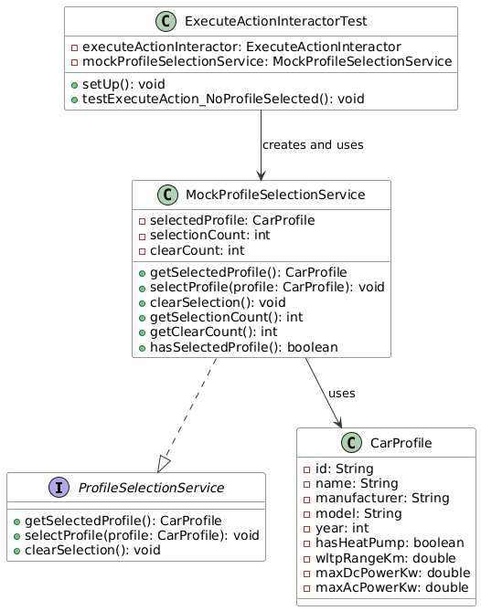Mock #2: MockUserInputAdapter
Funktionen & Implementierung:
- Unterstützt verschiedene Eingabetypen
- Ermöglicht vordefinierte Eingabesequenzen
- Ermöglicht deterministische Testszenarien
- Ersetzt Benutzereingabe zur UI-Interaktion
- Bietet Fallback-Werte für leere Eingaben
- Implementiert
UserInputPortInterface
Kritik vorab:
- Komplexität für einfache Tests relativ hoch
- Fehlendes Verhalten bei Fehleingaben (z.B. Exceptionhandling)
Mock #2: Code
public class MockUserInputAdapter implements UserInputPortInterface {
private final Queue stringInputs = new ArrayDeque<>();
private final Queue intInputs = new ArrayDeque<>();
private final Queue doubleInputs = new ArrayDeque<>();
private final Queue booleanInputs = new ArrayDeque<>();
private String defaultStringInput = "";
private int defaultIntInput = 0;
private double defaultDoubleInput = 0.0;
private boolean defaultBooleanInput = false;
public void addStringInput(String input) {
stringInputs.add(input);
}
public void addStringInputs(String... inputs) {
for (String input : inputs) {
stringInputs.add(input);
}
}
public void addIntInput(int input) {
intInputs.add(input);
}
public void addIntInputs(int... inputs) {
for (int input : inputs) {
intInputs.add(input);
}
}
public void addDoubleInput(double input) {
doubleInputs.add(input);
}
public void addDoubleInputs(double... inputs) {
for (double input : inputs) {
doubleInputs.add(input);
}
}
public void addBooleanInput(boolean input) {
booleanInputs.add(input);
}
public void addBooleanInputs(boolean... inputs) {
for (boolean input : inputs) {
booleanInputs.add(input);
}
}
@Override
public String readLine() {
return stringInputs.isEmpty() ? defaultStringInput : stringInputs.poll();
}
@Override
public int readInt() {
return intInputs.isEmpty() ? defaultIntInput : intInputs.poll();
}
@Override
public double readDouble() {
return doubleInputs.isEmpty() ? defaultDoubleInput : doubleInputs.poll();
}
@Override
public boolean readBoolean(String yesOption, String noOption) {
return booleanInputs.isEmpty() ? defaultBooleanInput : booleanInputs.poll();
}
public void setDefaultStringInput(String defaultInput) {
this.defaultStringInput = defaultInput;
}
public void setDefaultIntInput(int defaultInput) {
this.defaultIntInput = defaultInput;
}
public void setDefaultDoubleInput(double defaultInput) {
this.defaultDoubleInput = defaultInput;
}
public void setDefaultBooleanInput(boolean defaultInput) {
this.defaultBooleanInput = defaultInput;
}
public boolean hasStringInputs() {
return !stringInputs.isEmpty();
}
public boolean hasIntInputs() {
return !intInputs.isEmpty();
}
public boolean hasDoubleInputs() {
return !doubleInputs.isEmpty();
}
public boolean hasBooleanInputs() {
return !booleanInputs.isEmpty();
}
public void clearInputs() {
stringInputs.clear();
intInputs.clear();
doubleInputs.clear();
booleanInputs.clear();
}
}
Mock #2: UML
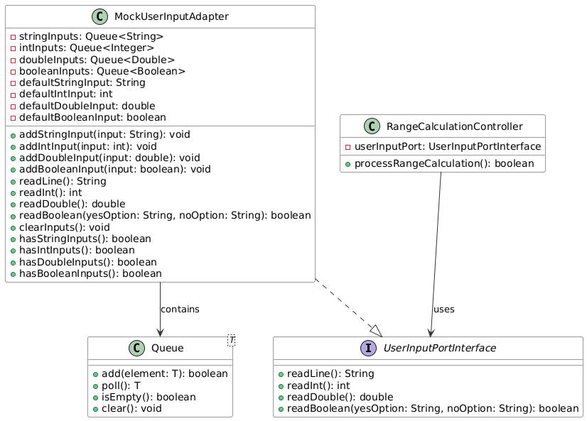Vergleich der Mock-Implementierungen
| Aspekt | MockProfileSelectionService | MockUserInputAdapter |
|---|---|---|
| Zweck | Verhaltensverifikation (Methodenzähler) | Simulation von Eingabesequenzen |
| Komplexität | Niedrig (Status basiert) | Hoch (Typ-Queue-Handling) |
| Architektur-Schicht | Application / Domain | Infrastructure |
| Kritik | Keine Validierung, keine Events | Kein Fehlerverhalten, hoher Overhead |
Kapitel 6:
Domain Driven Design
(8P)
Inhalt des Kapitels
1. Ubiquitous Language (2P)
- 4 Beispiele für die Ubiquitous Language
- Bezeichnung und Bedeutung
- Begründung der Zugehörigkeit
2. Repositories (1.5P)
- Beschreibung des Repositories
- Code
- UML-Diagramm
- Begründung & Vorteile des Einsatzes
3. Aggregates (1.5P)
- Beschreibung des Aggregates
- Code
- UML-Diagramm
- Begründung & Vorteile des Einsatzes
4. Entities & Value Objects (1.5p + 1.5p)
- Beschreibung der Komponenten
- Code
- UML-Diagramme
- Begründung & Vorteile des Einsatzes
Ubiquitous Language (2p)
Vier Beispiele für die Ubiquitous Language; jeweils Bezeichnung, Bedeutung und kurze Begründung, warum es zur Ubiquitous Language gehört
Ubiquitous Language
| Begriff | Bedeutung | Verwendung | Ubiquitous Language |
|---|---|---|---|
| SoC (State of Charge) | Prozentualer Ladezustand der Batterie (0-100%) | Parameter für Reichweitenberechnung und Ladezeit | Fachbegriff aus dem E-Mobility-Bereich, der die gemeinsame Sprache zwischen Technikern und Anwendern bildet |
| WLTP-Range | Standardisierte Reichweite nach Worldwide Harmonized Light Vehicles Test Procedure | Basis für realistische Reichweitenberechnung | Regulatorischer Begriff, der eine einheitliche Verständnisgrundlage für Fahrzeugleistung bietet |
Ubiquitous Language (Fortsetzung)
| Begriff | Bedeutung | Verwendung | Ubiquitous Language |
|---|---|---|---|
| Charging Curve | Verlauf der Ladeleistung in Abhängig vom SoC | Berechnung von Ladezeiten an DC-Ladestationen | Technisches Konzept, das sowohl für Entwickler als auch Benutzer die Ladeeigenschaften beschreibt |
| Battery Type (LFP, NMC, NCA) | Chemische Zusammensetzung der Batterie (Lithium-Eisenphosphat, Nickel-Mangan-Cobalt, Nickel-Cobalt-Aluminium) | Berechnung von Degradation und Ladegeschwindigkeit | Chemische Klassifikation, die technische Eigenschaften für das gesamte Team eindeutig kommunizierbar macht |
Repositories (1.5P)
UML, Beschreibung und Begründung des Einsatzes eines Repositories; falls kein Repository vorhanden: ausführliche Begründung, warum es keines geben kann/hier nicht sinnvoll ist – NICHT, warum es nicht implementiert wurde
Repository:
CarProfileRepository
- Persistenz von Fahrzeugprofilen ohne Offenlegung der Speichermechanismen
- Domain Entities können unabhängig von der Persistenz modelliert werden
- Unterstützt die "Illusion" einer In-Memory-Sammlung
- Ermöglicht einfachen Austausch der Persistenztechnologie im Falle von Refactoring
Repository: Code
Repository: UML
Repository:
Begründung & Vorteile
- Klare Trennung zwischen Domänenlogik und Persistenzmechanismus
- Vereinfachung des Domain Model durch Abstraktion der Persistenz
- Ermöglicht die Anwendung von Clean Architecture Prinzipien
- Erleichtert das Testen durch Mocking der Repository-Implementierung
- Entscheidung für Datenspeicherung in JSON-Dateien bleibt flexibel änderbar
Aggregates (1.5p)
UML, Beschreibung und Begründung des Einsatzes eines Aggregates; falls kein Aggregate vorhanden: ausführliche Begründung, warum es keines geben kann/hier nicht sinnvoll ist – NICHT, warum es nicht implementiert wurde
Aggregates:
CarProfile Aggregate Root
- Koordiniert mehrere Value Objects (BatteryProfile, ConsumptionProfile, ChargingCurve)
- Stellt die Konsistenz zwischen den Value Objects sicher
- Bildet eine sogenannte "transaktionale Einheit" für Änderungen
- Einziger Zugriffspunkt für enthaltene Value Objects
- Hat eine eigene Identität (ID) (-> Aggregate Root)
Aggregates: Code
Aggregate: UML
Aggregates: Vorteile & Begründung
- CarProfile als Aggregate Root koordiniert die Konsistenz seiner Value Objects
- Stellt sicher, dass BatteryProfile, ConsumptionProfile und ChargingCurve immer konsistent sind
- Vereinfacht die Persistenz, da nur der Aggregate Root direkt gespeichert werden muss
- Schützt die Value Objects vor unerlaubten Änderungen von außen
- Modelliert die natürliche Gruppierung von Fahrzeugdaten und deren Komponenten
Entities (1.5P)
UML, Beschreibung und Begründung des Einsatzes einer Entity; falls keine Entity vorhanden: ausführliche Begründung, warum es keine geben kann/hier nicht sinnvoll ist – NICHT, warum es nicht implementiert wurde
Entities:
CarProfile als Entity
- Besitzt eine eindeutige Identität (UUID)
- Identität bleibt über den gesamten Lebenszyklus erhalten
- Kann verändert und weiterentwickelt werden (auch wenn in ULRICA immutable)
- Wird über die Identität verglichen, nicht über Attributwerte
- Repräsentiert ein reales Objekt (Elektrofahrzeug) mit eigenem Lebenszyklus
Entity: UML
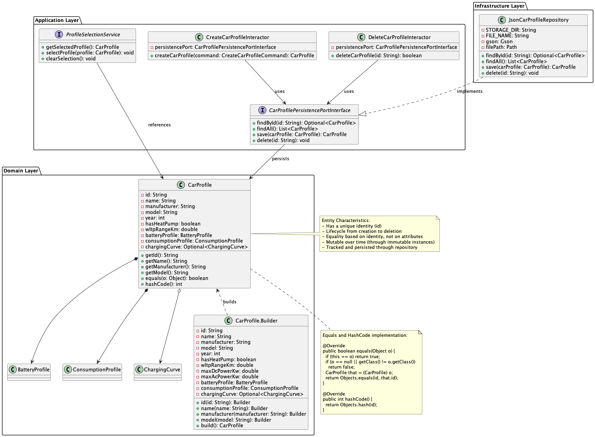Entity: Begründung & Vorteile
- Eindeutige Identifikation von Objekten unabhängig von ihren Attributen
- Möglichkeit, Entitäten über ihren Lebenszyklus hinweg zu verfolgen
- Konsistente Identifikation in verschiedenen Kontexten des Systems
- Klare Unterscheidung zwischen Identität und Attributen
- Natürliche Abbildung von realen Objekten mit eigener Identität
Value Objects (1.5P)
UML, Beschreibung und Begründung des Einsatzes eines Value Objects; falls kein Value Object vorhanden: ausführliche Begründung, warum es keines geben kann/hier nicht sinnvoll ist – NICHT, warum es nicht implementiert wurde
Value Objects: BatteryProfile als ValueObject
- Keine eigene Identität
- Immutable (unveränderlich) nach Erstellung
- Vergleich basiert auf allen Attributwerten
- Beschreibt eine Messung oder ein Konzept
- Kann problemlos ersetzt werden
- Validiert sich selbst bei der Erstellung
Value Object: Code
public final class BatteryProfile {
private final BatteryType type;
private final double capacityKwh;
private final double degradationPercent;
private final double maxDcPowerKw;
private final double maxAcPowerKw;
public BatteryProfile(BatteryType type, double capacityKwh, double degradationPercent, double maxDcPowerKw, double maxAcPowerKw) {
if (capacityKwh <= 0) {
throw new IllegalArgumentException("Battery capacity must be positive");
}
if (degradationPercent < 0 || degradationPercent > 100) {
throw new IllegalArgumentException("Degradation must be between 0 and 100 percent");
}
if (maxDcPowerKw <= 0) {
throw new IllegalArgumentException("Max DC power must be positive");
}
if (maxAcPowerKw <= 0) {
throw new IllegalArgumentException("Max AC power must be positive");
}
this.type = Objects.requireNonNull(type, "Battery type cannot be null");
this.capacityKwh = capacityKwh;
this.degradationPercent = degradationPercent;
this.maxDcPowerKw = maxDcPowerKw;
this.maxAcPowerKw = maxAcPowerKw;
}
public BatteryType getType() {
return type;
}
public double getCapacityKwh() {
return capacityKwh;
}
public double getDegradationPercent() {
return degradationPercent;
}
public double getRemainingCapacityKwh() {
return capacityKwh * (1 - degradationPercent / 100);
}
public double getMaxDcPowerKw() {
return maxDcPowerKw;
}
public double getMaxAcPowerKw() {
return maxAcPowerKw;
}
@Override
public boolean equals(Object o) {
if (this == o) return true;
if (o == null || getClass() != o.getClass()) return false;
BatteryProfile that = (BatteryProfile) o;
return Double.compare(that.capacityKwh, capacityKwh) == 0 &&
Double.compare(that.degradationPercent, degradationPercent) == 0 &&
Double.compare(that.maxDcPowerKw, maxDcPowerKw) == 0 &&
Double.compare(that.maxAcPowerKw, maxAcPowerKw) == 0 &&
type == that.type;
}
@Override
public int hashCode() {
return Objects.hash(type, capacityKwh, degradationPercent, maxDcPowerKw, maxAcPowerKw);
}
@Override
public String toString() {
return String.format(
"Type: %s (%s)%n" +
"Capacity: %.1f kWh%n" +
"Degradation: %.1f%%%n" +
"Remaining Capacity: %.1f kWh%n" +
"Max DC Power: %.1f kW%n" +
"Max AC Power: %.1f kW",
type.name(), type.getDescription(),
capacityKwh, degradationPercent,
getRemainingCapacityKwh(),
maxDcPowerKw, maxAcPowerKw
);
}
} Value Objects: UML
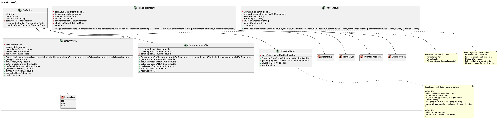Value Objects: Begründung & Vorteile
- Batteryprofile und ConsumptionProfile sind immutable und damit thread-safe
- Vereinfachte Validierung durch Konstruktor basierte Erstellung
- Natürliche Modellierung von Messwerten und Konzepten ohne Identität
- Einfache Vergleichbarkeit durch attribut-basierte equals-Implementierung
- Können problemlos ausgetauscht werden, da sie keine Identität haben
Kapitel 7:
Refactoring (8P)
Inhalt des Kapitels
1. Code Smells (2P)
- Lange Methode in "RangeCalculationController"
- Duplizierter Code in "Charging Calculators"
2. Refactorings (6P)
- "Extract Method"
- Ersetzen von Conditionals mit Polymorphism
Code Smells (2p)
Jeweils 1 Code-Beispiel zu 2 unterschiedlichen Code Smells (die benannt werden müssen) aus der Vorlesung; jeweils Code-Beispiel und einen möglichen Lösungsweg bzw. den genommen Lösungsweg beschreiben (inkl. (Pseudo-)Code)
Code Smell 1: Lange Methode
Code Smell 1: Analyse
- Die Methode ist zu lang und komplex -> Unübersichtlich
- Viele verschiedene Verantwortlichkeiten in einer Methode
- Schlechte Lesbarkeit und Wartbarkeit
- Schwer zu testen
- Verletzt das Single Responsibility Principle
Code Smell 1: Lösungsvorschlag
Code Smell 2: Duplicate Code
Code Smell 2: Analyse
- Fast identischer Code in beiden Klassen (DC & AC Charging Calculators)
- Nur minimale Unterschiede in den Konstanten (0.5 vs 0.7)
- Verletzt das DRY-Prinzip (Don't Repeat Yourself)
- Schwer zu warten bei Änderungen
- Fehleranfällig bei Updates
Code Smell 2: Lösungsvorschlag
Logik kombinieren durch Berechnung
public class TemperatureEfficiencyCalculator {
private final double minEfficiency;
private final double maxEfficiency;
public TemperatureEfficiencyCalculator(double minEfficiency, double maxEfficiency) {
this.minEfficiency = minEfficiency;
this.maxEfficiency = maxEfficiency;
}
public double calculateEfficiency(double temperature) {
if (temperature < MIN_BATTERY_TEMPERATURE ||
temperature > MAX_BATTERY_TEMPERATURE) {
return 0.0;
}
if (temperature >= OPTIMAL_TEMPERATURE_MIN &&
temperature <= OPTIMAL_TEMPERATURE_MAX) {
return 1.0;
}
if (temperature < OPTIMAL_TEMPERATURE_MIN) {
return minEfficiency + (maxEfficiency - minEfficiency) *
(temperature - MIN_BATTERY_TEMPERATURE) /
(OPTIMAL_TEMPERATURE_MIN - MIN_BATTERY_TEMPERATURE);
} else {
return minEfficiency + (maxEfficiency - minEfficiency) *
(MAX_BATTERY_TEMPERATURE - temperature) /
(MAX_BATTERY_TEMPERATURE - OPTIMAL_TEMPERATURE_MAX);
}
}
}Refactorings (2p)
2 unterschiedliche Refactorings aus der Vorlesung jeweils benennen, anwenden, begründen, sowie UML vorher/nachher liefern; jeweils auf die Commits verweisen – die Refactorings dürfen sich nicht mit den Beispielen der Code Smells überschneiden
Refactoring 1: Code
Extrahieren der Parameter-Erfassung in eine separate Methode (commit a5638e0)
Vorher
Nachher
Refactoring 1: Erklärung
Vorteile
- Bessere Wartbarkeit durch modularen Code
- Einfachere Testbarkeit durch isolierte Funktionalität
- Reduzierte Komplexität in der Hauptmethode
- Einhaltung des Single Responsibility Principle (SRP) durch klare Trennung der Verantwortlichkeiten
- Einhaltung des Don't Repeat Yourself (DRY) Prinzips durch Vermeidung von Code-Duplikation
Änderungen
- Extraktion der Parameter-Erfassung in separate
Methode
collectRangeParameters() - Einführung einer neuen Klasse
RangeParameterszur Kapselung der Parameter - Vereinfachung der Hauptmethode
processRangeCalculation() - Reduzierung der Parameteranzahl im Use Case Interface
- Verbesserte Lesbarkeit durch klare Trennung von Parameter-Erfassung und Geschäftslogik
Refactoring 1: UML-Diagramme
Vorher
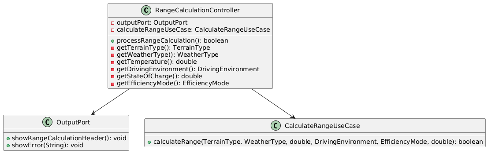Nachher
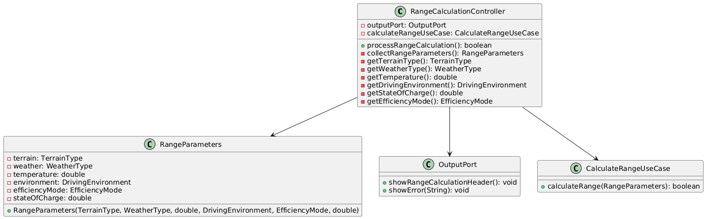Refactoring 2: Code
Ersetzen der Logik in den ChargingCalculators durch Polymorphie (943b4c7)
Vorher
Nachher
Refactoring 2: Erklärung
Vorteile
- Bessere Wartbarkeit durch klare Trennung der Verantwortlichkeiten
- Einfache Erweiterbarkeit durch neue Strategien
- Bessere Testbarkeit durch isolierte Komponenten
- Einhaltung des Open/Closed Principle
- Reduzierte Komplexität in den Charging Calculators
Änderungen
- Einführung des
ChargingStrategyInterfaces - Implementierung konkreter Strategien:
HouseholdSocketStrategy,CampingSocketStrategy,WallboxStrategy,DcChargingStrategy - Ersetzung der Logik durch polymorphe Methodenaufrufe
- Kapselung der Effizienzberechnung in den jeweiligen Strategieklassen
- Einführung von Konstruktoren für kontextabhängige Strategien
Refactoring 2: UML-Diagramme
Vorher
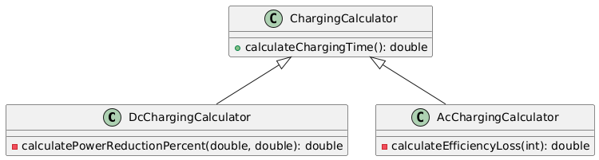Nachher
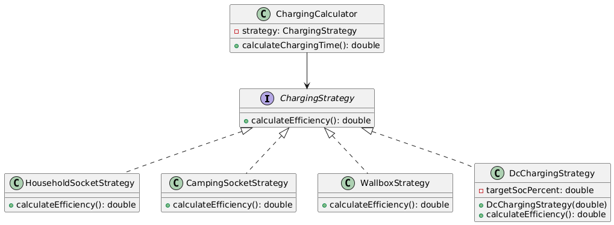Kapitel 8:
Entwurfsmuster (8P)
Zwei unterschiedliche Entwurfsmuster aus der Vorlesung (oder nach Absprache auch andere) jeweils benennen, sinnvoll einsetzen, begründen und UML-Diagramm
Entwurfsmuster 1:
Strategy Pattern (4P)
Überblick
- Kategorie/Art: Behavioral Pattern
- Zweck: Definiert eine Familie von Algorithmen, kapselt sie ab und macht sie austauschbar (Laufzeit u. Compilezeit)
- Verwendung: Implementierung verschiedener Berechnungsstrategien für die Reichweite von Elektrofahrzeugen
Vorteile
- Kapselung von unterschiedlichen Algorithmen in getrennten Klassen
- Laufzeitentscheidung über zu verwendende Strategie
- Leichte Erweiterbarkeit um neue Strategien (Auch gut für OCP)
- Einhaltung des Open/Closed Principles
- Vermeidung von bedingten Verzweigungen durch Polymorphie
Entwurfsmuster 1:
Strategy Pattern (Forsetzung)
Nachteile
- Erhöhte Komplexität durch viele kleine Klassen
- Client/Klasse muss die verschiedenen Strategien kennen
- Möglicher Overhead durch zusätzliche Erstellung von Objekten
- Strategie-Auswahl kann komplex werden
- Schwieriger zu debuggen durch verteilte Logik
Strategy Pattern: Interface
Strategy Pattern: Erste Implementierung
Strategy Pattern: Zweite Implementierung
Strategy Pattern: Verwendung im Client
Strategie Pattern: Vergleich
| Aspekt | ConsumptionBasedRangeCalculationStrategy | WltpBasedRangeCalculationStrategy |
|---|---|---|
| Basis für Berechnung | Verbrauchsprofile des Fahrzeugs bei verschiedenen Geschwindigkeiten (50, 100, 130 km/h) | WLTP-Reichweite des Fahrzeugs als Fixwert |
| Kalkulation Grundverbrauch | Basierend auf dem aktuellen Fahrumfeld (DrivingEnvironment) wird ein Verbrauchswert (kWh/100km) gewählt | Es wird ein durchschnittlicher Verbrauch aus der WLTP-Reichweite und Batteriekapazität berechnet |
| Berücksichtigte Faktoren | Effizienzmodus, Geländeart, Wetterbedingungen, Temperatur, Batterieladestand | Effizienzmodus, Geländeart, Wetterbedingungen, Temperatur, Batterieladestand, zusätzlich ein Fahrumgebungsfaktor (EnvironmentFactor) |
Strategy Pattern: UML-Diagramm
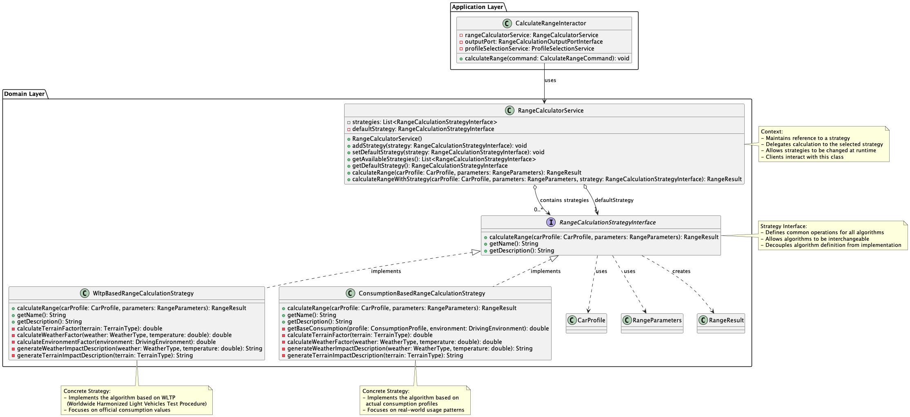Entwurfsmuster 2: Adapter Pattern (4P)
Überblick
- Art/Kategorie: Strukturmuster (Structural Pattern)
- Zweck: Konvertiert die Schnittstelle einer Klasse in eine andere, die vom Client erwartet wird
- Verwendung: Integration von I/O-Operationen in die Clean Architecture
Vorteile
- Flexibilität durch lose Kopplung
- Einfach zu erweitern
- Trennt Geschäftslogik von externen Ressourcen u. Komponenten
- Ermöglicht Zusammenarbeit nicht-kompatibler Schnittstellen
Entwurfsmuster 2:
Adapter Pattern (Fortsetzung)
Nachteile
- Zusätzliche Komplexität durch zusätzliche Abstraktionsebene
- Möglicher Overhead durch zusätzliche Methodenaufrufe
- Erhöhte Anzahl von Klassen und Interfaces
- Externe können abrupt aufrufen